SXT课堂笔记¶
Python入门¶
Python介绍¶
简介¶
Python 是一种解释型、面向对象的语言。由吉多·范·罗苏姆（Guido van Rossum）于1989 年发明，1991 年正式公布。官网：https://www.python.org/
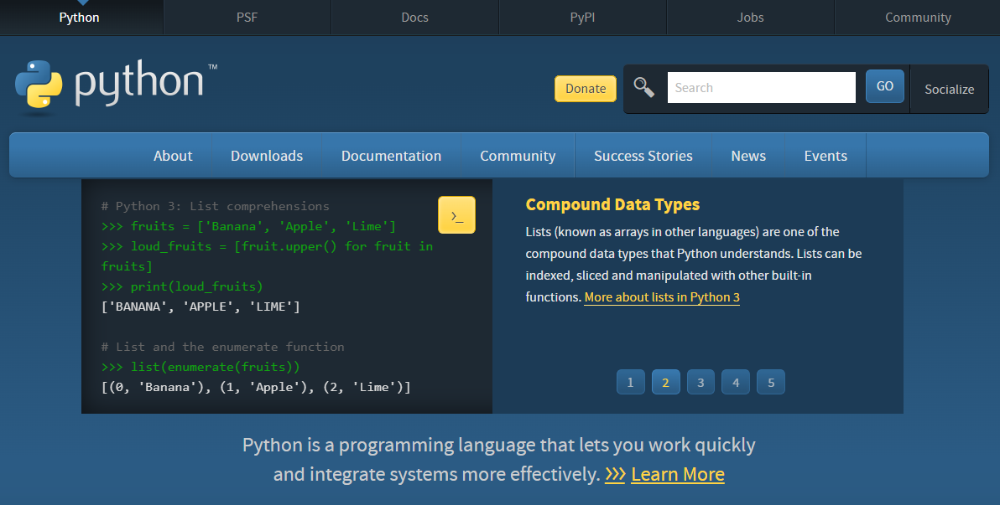
Python 单词是“大蟒蛇”的意思。但是龟叔不是喜欢蟒蛇才起这个名字，而是正在追剧：英国电视喜剧片《蒙提·派森的飞行马戏团》(Monty Python and the Flying Circus)。
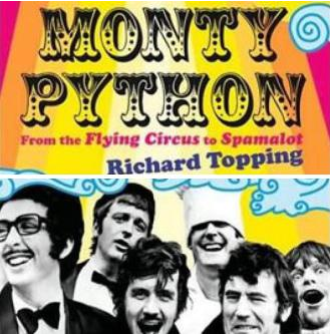
特点¶
- 可读性强
可读性远比听上去重要的多得多。一个程序会被反复的修改，可读性强意味着让你可以在更短时间内学习和记忆，直接提高生产率。 - 简洁，简洁，简洁
研究证明，程序员每天可编写的有效代码数是有限的。完成同样功能只用一半的代码，其实就是提高了一倍的生产率。
Python 是由 C 语言开发，但是不再有 C 语言中指针等复杂数据类型，Python 的简洁性让开发难度和代码幅度大幅降低，开发任务大大简化。程序员再也不需要关注复杂的语法，而是关注任务本身。 - 面向对象
- 免费和开源
- 可移植性和跨平台
Python 会被编译成与操作系统相关的二进制代码，然后再解释执行。这种方式和java 类似，大大提高了执行速度，也实现了跨平台。 - 丰富的库（丰富的标准库， 多种多样的扩展库）
- 可扩展性。 可嵌入到 C 和 C++语言。 胶水式语言。
应用范围¶
- 科学计算
- 人工智能
- WEB 服务端和大型网站后端。
YouTube、gmail 等应用基于 python 开发。 - GUI 开发（图形用户界面开发）
- 游戏开发
- 移动设备
- 嵌入式设备
- 系统运维
- 大数据
- 云计算
Python 解释器¶
Python 程序的执行依赖于 Python 解释器。常用的 Python 解释器有：
-
CPython
使用 c 语言实现的解释器，最常用的解释器。通常说的解释器指的就是它。 -
Jython
使用 java 语言实现的解释器。Jython 可以直接调用 java 类库，适合在 java 平台上开发 -
IronPython
.NET 平台上使用的解释器。可直接调用.NET 平台的类，适合.NET 平台上开发 -
PyPy
使用 Python 语言实现的解释器
Python开发入门¶
Python 下载安装和配置¶
- 进入官网
- 下载
- 安装（和安装一般软件区别不大）
- 环境变量问题
勾选：“Add Python to environment variable”。 这样就会将 Python 添加到环境
变量 Path 中，我们可以在 windows 的命令行模式下运行 Python 解释器。
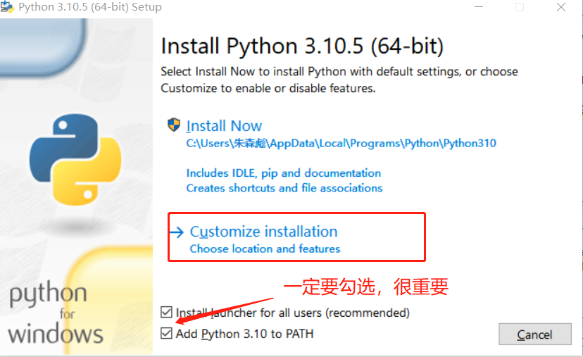
Python 开发环境¶
开发环境，英文是 IDE（Integrated Development Environment 集成开发环境）。
不要纠结于使用哪个开发环境。开发环境本质上就是对 Python 解释器 python.exe 的封装，核心都一样。可以说：“开发环境 IDE，只是解释器的一个外挂而已”，只是为了让程序员更加方便编程，减少出错率，尤其是拼写错误。
常用的开发环境如下：
- IDLE
- Pycharm
- wingIDE
- Eclipse
- IPython
交互模式(脚本 shell 模式)¶
- 进入命令行窗口，输入：python 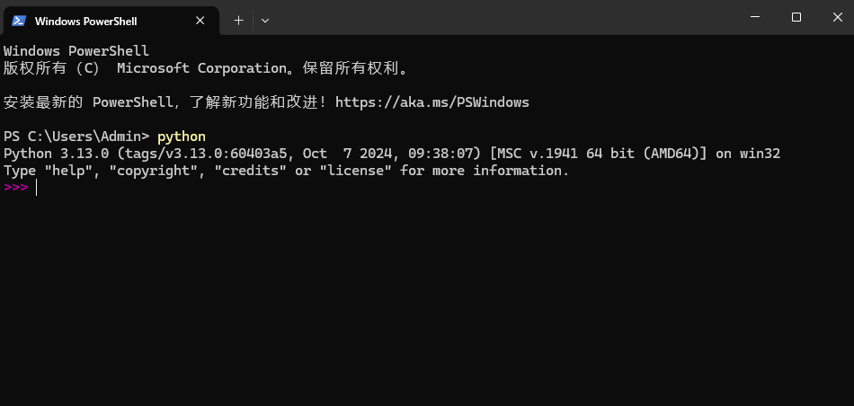
- “>>>"即为“提示符”
- 关闭交互窗口： (1) Ctrl+Z 和回车 (2) 输入 quit()命令 (3) 直接关闭命令行窗口
- 中断程序执行：ctrl+C
交互模式工作原理和 Python 处理文件的方式一样。除了一点：当你输入一些值时，交互模式会自动打印输出。Py 文件中则必须使用 print 语句。
IDLE 开发环境使用入门¶
IDLE 介绍¶
- IDLE 是 Python 的官方标准开发环境，Python 安装完后同时就安装了 IDLE。
- IDLE 已经具备了 Python 开发几乎所有功能（语法智能提示、不同颜色显示不同类型等等），也不需要其他配置，非常适合初学者使用。
- IDLE 是 Python 标准发行版内置的一个简单小巧的 IDE，包括了交互式命令行、编辑器、调试器等基本组件，足以应付大多数简单应用。
- IDLE 是用纯 Python 基于 Tkinter 编写，最初的作者正是 Python 之父 Guido van Rossum。
IDLE 实操¶
- 交互模式
启动 IDLE，默认就是进入交互模式。 - 编写和执行 Python 源文件
IDLE 常用快捷键¶
| 快捷键 | 说明 |
|---|---|
| Alt+N Alt+P | 查看历史命令上一条、下一条 |
| Ctrl+F6 | 重启 shell，以前定义的变量全部失效 |
| F1 | 打开帮助文档 |
| Alt+/ | 自动补全前面曾经出现过的单词 |
| Ctrl + [ Ctrl + ] | 缩进代码和取消缩进 |
| Alt+M | 打开模块代码，先选中模块，然后按下此快捷键，会帮你打开改模块的 py 源码供浏览 |
| Alt+C | 打开类浏览器，方便在源码文件中的各个方法体之间切换 |
| F5 | 运行程序 |
程序基本格式¶
- 恰当的空格，缩进问题
(1) 逻辑行首的空白（空格和制表符）用来决定逻辑行的缩进层次，从而用来决定语句的分组。
(2) 语句从新行的第一列开始。
(3) 缩进风格统一：- 每个缩进层次使用 单个制表符 或四个空格（IDE 会自动将制表符设置成 4 个空格）
- Python 用缩进而不是{}表示程序块
- Python 区分大小写
- 注释
(1) 行注释
每行注释前加#号。当解释器看到#，则忽略这一行#后面的内容
(2) 段注释
使用三个连续单引号（'''）。当解释看到'''，则会扫描到下一个'''，然后忽略他们之间的内容。
编程基本概念¶
Python 程序的构成¶
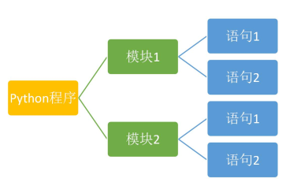
- Python 程序由模块组成。一个模块对应 python 源文件，一般后缀名是：.py。
- 模块由语句组成。运行 Python 程序时，按照模块中语句的顺序依次执行。
- 语句是 Python 程序的构造单元，用于创建对象、变量赋值、调用函数、控制语句等。
Python 文件的创建和执行¶
前面使用的交互式环境，每次只能执行一条语句；为了编写多条语句实现复杂的逻辑，本章开始我们通过创建 Python 文件，并执行该文件。
在 IDLE 环境中，我们可以通过 File→new 创建 Python 文件，并可以编辑该文件内容。我们也可以通过 File→save/save as 保存文件。一般保存成扩展名为 py 的文件。
需要执行编辑好的文件，可以用快捷键 F5 或者点击 Run→Run module。
代码的组织和缩进¶
很多编程语言通过字符(例如：花括号{})、关键字(例如：begain/end)来划分代码块。 同时，在配合代码的缩进增加可读性。“龟叔”设计 Python 语言时，直接通过缩进来组织代码块。“缩进”成为了 Python 语法强制的规定。
缩进时，几个空格都是允许的，但是数目必须统一。我们通常采用“四个空格”表示一个缩进。
同时，也要避免将“tab 制表符”或者 tab 与空格混合的缩进风格。目前，常用的编辑器一般设置成：tab 制表符就是 4 个空格。
Python 官方推荐的 PEP-8 代码风格详细说明，有兴趣的同学可以参考：
https://www.python.org/dev/peps/pep-0008/
使用注释#¶
注释是程序中会被 Python 解释器忽略的一段文本。程序员可以通过注释记录任意想写的内容，通常是关于代码的说明。
Python 中的注释只有单行注释，使用 # 开始直到行结束的部分。
>>> # 注释是个好习惯，方便自己方便他人
>>> a = [10,20,30] #生成一个列表对象，变量 a 引用了这个变量
使用\行连接符¶
一行程序长度是没有限制的，但是为了可读性更强，通常将一行比较长的程序分为多行。这时，我们可以使用\行连接符，把它放在行结束的地方。Python 解释器仍然将它们解释为同一行。
>>> a = [10,20,30,40,\
50,60,70,\
80,90,100]
>>> a
[10, 20, 30, 40, 50, 60, 70, 80, 90, 100]
>>> a = 'abcdefghijklmnopqrstuvwxyz'
>>> b = 'abcdefg\
hijklmn\
opqrst\
uvwxyz'
>>> a
'abcdefghijklmnopqrstuvwxyz'
>>> b
'abcdefghijklmnopqrstuvwxyz'
对象¶
Python 中，一切皆对象。每个对象由：标识（identity）、类型（type）、value（值）组成。
1. 标识用于唯一标识对象，通常对应于对象在计算机内存中的地址。使用内置函数 id(obj)可返回对象 obj 的标识。
2. 类型用于表示对象存储的“数据”的类型。类型可以限制对象的取值范围以及可执行的操作。可以使用 type(obj)获得对象的所属类型。
3. 值表示对象所存储的数据的信息。使用 print(obj)可以直接打印出值。
对象的本质就是：一个内存块，拥有特定的值，支持特定类型的相关操作。
源码：
>>> a = 3
>>> a
3
>> id(3)
1531372336
>>> type(3)
<class 'int'>
>>> b = "我爱你"
>>> id(a)
1531372336
>>> type(a)
<class 'int'>
>>> print(a)
3
>> id(b)
46806816
>>> type(b)
<class 'str'>
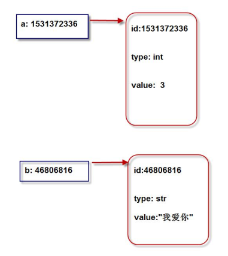
引用¶
在 Python 中，变量也称为：对象的引用。因为，变量存储的就是对象的地址。
变量通过地址引用了“对象”。
变量位于：栈内存（压栈出栈等细节，后续再介绍）。
对象位于：堆内存。
- Python 是动态类型语言
变量不需要显式声明类型。根据变量引用的对象，Python 解释器自动确定数据类型。 - Python 是强类型语言
每个对象都有数据类型，只支持该类型支持的操作。
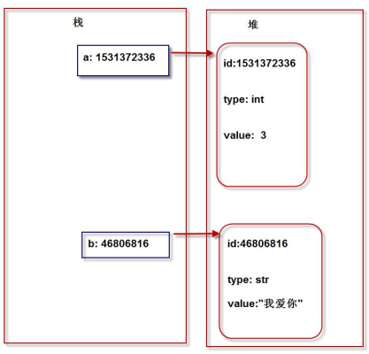
标识符¶
基本用法¶
标识符：用于变量、函数、类、模块等的名称。标识符有如下特定的规则：
- 区分大小写。如：sxt 和 SXT 是不同的
- 第一个字符必须是字母、下划线。其后的字符是：字母、数字、下划线
- 不能使用关键字。比如：if、or、while 等。
- 以双下划线开头和结尾的名称通常有特殊含义，尽量避免这种写法。比如：__init__是类的构造函数。
【操作】使用 Python 帮助系统查看关键字
>>> help()
help> keywords
False def if raise
None del import return
True elif in try
and else is while
as except lambda with
assert finally nonlocal yield
break for not
class from or
continue global pass
Python 标识符命名规则¶
开发中，我们通常约定俗称遵守如下规则：
| 类型 | 规则 | 例子 |
|---|---|---|
| 模块和包名 | 全小写字母，尽量简单。若多个单词之间用下划线 | math, os, sys |
| 函数名 | 全小写字母，多个单词之间用下划线隔开 | phone, my_name |
| 类名 | 首字母大写，采用驼峰原则。多个单词时，每个单词第一个字母大写，其余部分小写 | MyPhone、MyClass、Phone |
| 常量名 | 全大写字母，多个单词使用下划线隔开 | SPEED、MAX_SPEED |
变量和简单赋值语句¶
变量的声明和赋值¶
变量的声明和赋值用于将一个变量绑定到一个对象上，格式如下：
变量名 = 表达式
最简单的表达式就是字面量。比如：a = 123 。 运行过程中，解释器先运行右边的表达式，生成一个代表表达式运算结果的对象；然后，将这个对象地址赋值给左边的变量。
【操作】变量在使用前必须先被初始化（先被赋值）
>>> my_name
Traceback (most recent call last):
File "<pyshell#17>", line 1, in <module>
my_name
NameError: name 'my_name' is not defined
删除变量和垃圾回收机制¶
可以通过 del 语句删除不在使用的变量。
【操作 55】删除变量示例
>>> x=123
>>> del x
>>> x
Traceback (most recent call last):
File "<pyshell#20>", line 1, in <module>
x
NameError: name 'x' is not defined
链式赋值¶
链式赋值用于同一个对象赋值给多个变量。
x=y=123 相当于：x=123; y=123
系列解包赋值¶
系列数据赋值给对应相同个数的变量（个数必须保持一致）
a,b,c=4,5,6 相当于：a=4;b=5;c=6
【操作】使用系列解包赋值实现变量交换
>>> a,b=1,2
>>> a,b=b,a
>>> print(a,b)
2 1
常量¶
Python 不支持常量，即没有语法规则限制改变一个常量的值。我们只能约定常量的命名规则，以及在程序的逻辑上不对常量的值作出修改。
>>> MAX_SPEED = 120
>>> print(MAX_SPEED)
120
>>> MAX_SPEED = 140 #实际是可以改的。只能逻辑上不做修改。
>>> print(MAX_SPEED)
140
基本内置数据类型和运算符¶
每个对象都有类型，python 中最基本的内置数据类型：
- 整型
整数，2345,10,50 - 浮点型
小数，3.14 或者科学计数法 314e-2 - 布尔型
表示真假，仅包含：True、False - 字符串型
由字符组成的序列。 “abc”,”sxt”,“尚学堂”,”百战程序员”
数字和基本运算符¶
Python 支持整数(如：50,520)和浮点数(如：3.14,10.0, 1.23e2)，我们可以对数字做如下运算。

【操作】基本运算符的使用
>>> a = 7/2
>>> a
3.5
>>> a = 7//2
>>> a
3 >
>> a = 7%2
>>> a
1
>> 7%4
3
>> 2**3
8 >
>> 3/0
Traceback (most recent call last):
File "<pyshell#37>", line 1, in <module>
3/0
ZeroDivisionError: division by zero
>>> divmod(10,5)
(2, 0)
>>> divmod(10,3)
(3, 1)
>>> 3/0
Traceback (most recent call last):
File "<pyshell#31>", line 1, in <module>
3/0
ZeroDivisionError: division by zero
>>> divmod(13,3)
(4, 1)
整数¶
Python 中，除 10 进制，还有其他三种进制：
- 0b 或 0B，二进制 0 1
- 0o 或 0O，八进制 0 1 2 3 4 5 6 7
- 0x 或 0X，十六进制 0 1 2 3 4 5 6 7 8 9 a b c d e f
这三种进制可以非常方便的进行“位运算”操作。位运算知识后续将会介绍。
【操作】测试不同进制
>>> 12
12
>>> 0b101
5
>> 0o19
SyntaxError: invalid syntax
>>> 0o10
8
>> 0xff
255
>>> 0xf
15
>>> 0x10
16
使用 int()实现类型转换：
- 浮点数直接舍去小数部分。如：int(9.9)结果是：9
- 布尔值 True 转为 1，False 转为 0。 如：int(True)结果是 1
- 字符串符合整数格式（浮点数格式不行）则直接转成对应整数，否则报错。
>>> int("456")
456
>>> int("456abc")
Traceback (most recent call last):
File "<pyshell#41>", line 1, in <module>
int("456abc")
ValueError: invalid literal for int() with base 10: '456abc'
>>> int("456.78")
Traceback (most recent call last):
File "<pyshell#42>", line 1, in <module>
int("456.78")
ValueError: invalid literal for int() with base 10: '456.78'
>>>
整数和浮点数混合运算时，表达式结果自动转型成浮点数。比如：2+8.0 的结果是 10.0
整数可以有多大？
Python2 中，int 是 32 位，可以存储从-2147483648 到 2147483647 的整数（约±21 亿）。Long 类型是 64 位，可以存储：-263--263-1 之间的数值。
Python3 中，int 可以存储任意大小的整数，long 被取消。我们甚至可以存储下面的值：
>>> googol = 10**100
>>> googol
1000000000000000000000000000000000000000000000000
0000000000000000000000000000000000000000000000000
000
Googol 也是 Google 最初的名字，这也是 Google 最初的含义。
Python3 中可以做超大数的计算，而不会造成“整数溢出”，这也是 Python 特别适合科学运算的特点。
浮点数¶
浮点数，称为 float。
浮点数用 axb10 形式的科学计数法表示。比如：3.14，表示成：314E-2 或者 314e-2。
这些数字在内存中也是按照科学计数法存储。
类型转换和四舍五入¶
- 类似于 int()，我们也可以使用 float()将其他类型转化成浮点数。
- 整数和浮点数混合运算时，表达式结果自动转型成浮点数。比如：2+8.0 的结果是 10.0
- round(value)可以返回四舍五入的值
注：但不会改变原有值，而是产生新的值
增强型赋值运算符¶
运算符+、-、，/、//、* 和 % 和赋值符 = 结合可以构成“增强型赋值运算符”。
a = a + 1 等价于： a +=1
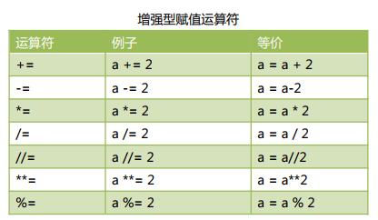
时间的表示¶
计算机中时间的表示是从“1970 年 1 月 1 日 00:00:00”开始，以毫秒（1/1000 秒）进行计算。我们也把 1970 年这个时刻成为“unix 时间点”。
这样，我们就把时间全部用数字来表示了。
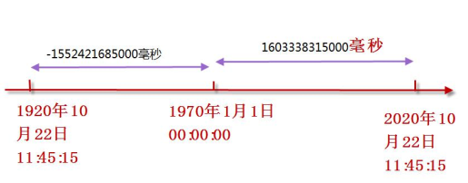
python 中可以通过 time.time() 获得当前时刻，返回的值是以秒为单位，带微秒（1/1000 毫秒）精度的浮点值。例如：1530167364.8566。
>>> import time
>>> b = int(time.time())
>>> b
1530168754
>>> totalMinutes = b/60
>>> totalMinutes
25502812.566666666
>>> totalMinutes = b//60
>>> totalMinutes
25502812
>>> totalHours = totalMinutes//60
>>> totalHours
425046
>>> totalDays = totalHours//24
>>> totalDays
17710
>>> totalYears = totalDays//365
>>> totalYears
48
布尔值¶
Python2 中没有布尔值，直接用数字 0 表示 False,用数字 1 表示 True。
Python3 中，把 True 和 False 定义成了关键字，但他们的本质还是 1 和 0，甚至可以和数字相加。
>>> a = True
>>> b = 3
>>> a+b
4
比较运算符¶
所有比较运算符返回 1 表示真，返回 0 表示假。这分别与特殊的变量 True 和 False 等价。
逻辑运算符¶
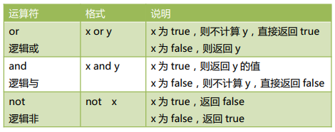
同一运算符¶
同一运算符用于比较两个对象的存储单元，实际比较的是对象的地址。
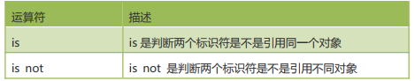
is 与 == 区别：
is 用于判断两个变量引用对象是否为同一个，既比较对象的地址。
== 用于判断引用变量引用对象的值是否相等，默认调用对象的 eq()方法。
整数缓存问题¶
Python 仅仅对比较小的整数对象进行缓存（范围为[-5, 256]）缓存起来，而并非是所有整数对象。需要注意的是，这仅仅是在命令行中执行，而在 Pycharm 或者保存为文件执行，结果是不一样的，这是因为解释器做了一部分优化(范围是[-5,任意正整数])。
总结
- is 比较两个对象的 id 值是否相等，是否指向同一个内存地址；
- == 比较的是两个对象的内容是否相等，值是否相等；
- 小整数对象[-5,256]在全局解释器范围内被放入缓存供重复使用；
- is 运算符比 == 效率高，在变量和 None 进行比较时，应该使用 is。
【操作】同一运算符测试
>>> a = 1000
>>> b = 1000
>>> a == b
True
>>> a is b
False
>>> id(a)
46764560
>>> id(b)
46765216
>>> c = 10
>>> d = 10
>>> c is d
True
>>> id(c)
1388831648
>>> id(d)
1388831648
基本运算符¶
我们在前面讲解了“+”、“-”、“*”、“/”、“//”、“%”等运算符，这里我们继续讲解一些其他运算符，并进行学习和测试。 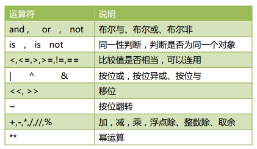
- 比较运算符可以连用，并且含义和我们日常使用完全一致。
>>> a = 4 >>> 3<a<10 #关系运算符可以连用 True - 位操作
>>> a = 0b11001 >>> b = 0b01000 >>> c = a|b >>> bin(c) #bin()可以将数字转成二进制表示 '0b11001' >>> bin(c&b) '0b1000' >>> bin(c^b) '0b10001' >>> a = 3 >>> a<<2 #左移 1 位相当于乘以 2.左移 2 位，相当于乘以 4 12 >>> a = 8 >>> a>>1 #右移 1 位相当于除以 2. - 加法操作
(1) 数字相加 3+2 == > 5
(2) 字符串拼接 “3”+“2”== > “32”
(3) 列表、元组等合并 [10,20,30]+[5,10,100] ==>[10,20,30,5,10,100] - 乘法操作
(1) 数字相乘 3*2 ==> 6
(2) 字符串复制 “sxt”*3 ==> ”sxtsxtsxt”
(3) 列表、元组等复制 [10,20,30]*3 ==> [10,20,30,10,20,30,10,20,30]
复合赋值运算符¶
复合赋值可以让程序更加精炼，提高效率。
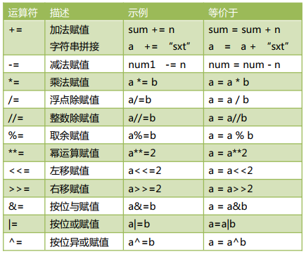
注：与 C 和 JAVA 不一样，Python 不支持自增(++)和自减(--)
运算符优先级问题¶
如下优先级，从高到低。
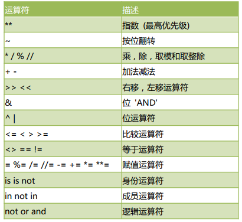
实际使用中，记住如下简单的规则即可，复杂的表达式一定要使用小括号组织。
- 乘除优先加减
- 位运算和算术运算 > 比较运算符 > 赋值运算符 > 逻辑运算符
字符串¶
字符串基本特点¶
很多人初学编程时，总是担心自己数学不行，潜意识里认为数学好才能编程。实际上，大多数程序员打交道最多的是“字符串”而不是“数字”。因为，编程是用来解决现实问题的，因此逻辑思维的重要性远远超过数学能力。
字符串的本质是：字符序列。Python 的字符串是不可变的，我们无法对原字符串做任何修改。但，可以将字符串的一部分复制到新创建的字符串，达到“看起来修改”的效果。
Python 不支持单字符类型，单字符也是作为一个字符串使用的。
字符串的编码¶
Python3 直接支持 Unicode，可以表示世界上任何书面语言的字符。Python3 的字符默认就是 16 位 Unicode 编码，ASCII 码是 Unicode 编码的子集。
使用内置函数 ord()可以把字符转换成对应的 Unicode 码；
使用内置函数 chr()可以把十进制数字转换成对应的字符。
>>> ord('A')
65
>>> ord('高')
39640
>>> chr(66)
'B'
>>> ord('淇')
28103
引号创建字符串¶
我们可以通过单引号或双引号创建字符串。例如：a=’abc’; b=”sxt”
使用两种引号的好处是可以创建本身就包含引号的字符串，而不用使用转义字符。例如：
>>> a = "I'm a teacher!"
>>> print(a)
I'm a teacher!
>>> b = 'my_name is "TOM"'
>>> print(b)
my_name is "TOM"
>>> resume = ''' name="gaoqi"
company="sxt" age=18
lover="Tom"'''
>>> print(resume)
name="gaoqi"
company="sxt" age=18
lover="Tom"
空字符串和 len()函数¶
Python 允许空字符串的存在，不包含任何字符且长度为 0。例如：
>>> c = ''
>>> len(c)
0
>>> d = 'abc 尚学堂'
>>> len(d)
6
转义字符¶
我们可以使用“+特殊字符”，实现某些难以用字符表示的效果。比如：换行等。常见的转义字符有这些：
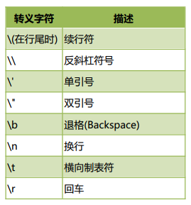
【操作】测试转义字符的使用
>>> a = 'I\nlove\nU'
>>> a
'I\nlove\nU'
>>> print(a)
I
love
U
>>> print('aaabb\
cccddd')
aaabbcccddd
字符串拼接¶
- 可以使用 + 将多个字符串拼接起来。例如：’aa’+ ’bb’ ==>’aabb’。
(1) 如果+两边都是字符串，则拼接。
(2) 如果+两边都是数字，则加法运算。
(3) 如果+两边类型不同，则抛出异常。 - 可以将多个字面字符串直接放到一起实现拼接。例如：’aa’’bb’==>’aabb’
【操作】字符串拼接操作
>>> a = 'sxt'+'gaoqi'
>>> a
'sxtgaoqi'
>>> b = 'sxt''gaoqi'
>>> b
'sxtgaoqi'
字符串复制¶
使用*可以实现字符串复制。
【操作】字符串复制操作
>>> a = 'Sxt'*3
>>> a
'SxtSxtSxt'
不换行打印¶
我们前面调用 print 时，会自动打印一个换行符。有时，我们不想换行，不想自动添加换行符。我们可以自己通过参数 end = “任意字符串”。实现末尾添加任何内容：
建立源文件 mypy_06.py：
print("sxt",end=' ')
print("sxt",end='##')
print("sxt")
sxt sxt##sxt
从控制台读取字符串¶
我们可以使用 input()从控制台读取键盘输入的内容。
>>> myname = input("请输入名字:")
请输入名字:高淇
>>> myname
'高淇'
str()实现数字转型字符串¶
str()可以帮助我们将其他数据类型转换为字符串。例如：
str(5.20) == > ‘5.20’
str(3.14e2)== >’314.0’
str(True) == > ‘True’
当我们调用 print()函数时，解释器自动调用了 str() 将非字符串的对象转成了字符串。我们在面向对象章节中详细讲解这部分内容。
使用[]提取字符¶
字符串的本质就是字符序列，我们可以通过在字符串后面添加[]，在[]里面指定偏移量，可以提取该位置的单个字符。
正向搜索：
最左侧第一个字符，偏移量是 0，第二个偏移量是 1，以此类推。直到 len(str)-1为止。
反向搜索：
最右侧第一个字符，偏移量是-1，倒数第二个偏移量是-2，以此类推，直到-len(str)为止。
【操作】使用[]提取字符串中的字符
>>> a = 'abcdefghijklmnopqrstuvwxyz'
>>> a
'abcdefghijklmnopqrstuvwxyz'
>>> a[0]
'a'
>>> a[3]
'd'
>>> a[26-1]
'z'
>>> a[-1]
'z'
>>> a[-26]
'a'
>>> a[-30]
Traceback (most recent call last):
File "<pyshell#91>", line 1, in <module>
a[-30]
IndexError: string index out of range
replace()实现字符串替换¶
字符串是“不可改变”的，我们通过[]可以获取字符串指定位置的字符，但是我们不能改变字符串。我们尝试改变字符串中某个字符，发现报错了：
>>> a = 'abcdefghijklmnopqrstuvwxyz'
>>> a
'abcdefghijklmnopqrstuvwxyz'
>>> a[3]='高'
Traceback (most recent call last):
File "<pyshell#94>", line 1, in <module>
a[3]='高'
TypeError: 'str' object does not support item assignment
字符串不可改变。但是，我们确实有时候需要替换某些字符。这时，只能通过创建新的字符串来实现。
>>> a = 'abcdefghijklmnopqrstuvwxyz'
>>> a
'abcdefghijklmnopqrstuvwxyz'
>>> a = a.replace('c','高')
'ab 高 defghijklmnopqrstuvwxyz'
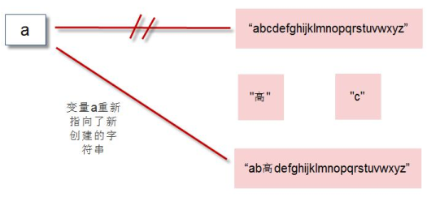
字符串切片 slice 操作¶
切片 slice 操作可以让我们快速的提取子字符串。标准格式为：
[起始偏移量 start：终止偏移量 end：步长 step]
典型操作(三个量为正数的情况)如下：
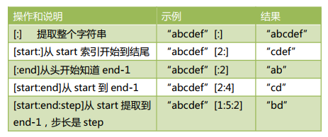
其他操作（三个量为负数）的情况：
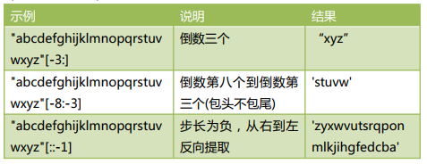
切片操作时，起始偏移量和终止偏移量不在[0,字符串长度-1]这个范围，也不会报错。起始偏移量小于 0 则会当做 0，终止偏移量大于“长度-1”会被当成-1。例如：
>>> "abcdefg"[3:50]
'defg'
split()分割和 join()合并¶
split()可以基于指定分隔符将字符串分隔成多个子字符串(存储到列表中)。如果不指定分隔符，则默认使用空白字符(换行符/空格/制表符)。示例代码如下：
>>> a = "to be or not to be"
>>> a.split()
['to', 'be', 'or', 'not', 'to', 'be']
>>> a.split('be')
['to ', ' or not to ', '']
join()的作用和 split()作用刚好相反，用于将一系列子字符串连接起来。示例代码如下：
>>> a = ['sxt','sxt100','sxt200']
>>> '*'.join(a)
'sxt*sxt100*sxt200'
拼接字符串要点：
使用字符串拼接符+，会生成新的字符串对象，因此不推荐使用+来拼接字符串。推荐使用 join 函数，因为 join 函数在拼接字符串之前会计算所有字符串的长度，然后逐一拷贝，仅新建一次对象。
【操作】测试+拼接符和 join()，不同的效率 (mypy_07.py)
import time
time01 = time.time() #起始时刻
a = ""
for i in range(1000000):
a += "sxt"
time02 = time.time() #终止时刻
print("运算时间："+str(time02-time01))
time03 = time.time() #起始时刻
li = []
for i in range(1000000):
li.append("sxt")
a = "".join(li)
time04 = time.time() #终止时刻
print("运算时间："+str(time04-time03))
字符串驻留机制和字符串比较¶
字符串驻留：仅保存一份相同且不可变字符串的方法，不同的值被存放在字符串驻留池中。
Python 支持字符串驻留机制，对于符合标识符规则的字符串（仅包含下划线（_）、字母和数字）会启用字符串驻留机制驻留机制。
>>> a = "abd_33"
>>> b = "abd_33"
>>> a is b
True
>>> c = "dd#"
>>> d = "dd#"
>>> c is d
False
>>> str1 = "aa"
>>> str2 = "bb"
>>> str1+str2 is "aabb"
False
>>> str1+str2 == "aabb"
True
字符串比较和同一性¶
我们可以直接使用==,!=对字符串进行比较，是否含有相同的字符。
我们使用 is / not is，判断两个对象是否同一个对象。比较的是对象的地址，即 id(obj1)是否和 id(obj2)相等。
成员操作符¶
in /not in 关键字，判断某个字符(子字符串)是否存在于字符串中。
字符串常用方法汇总¶
字符串有很多常用的方法，我们需要熟悉。我们通过表格将这些方法汇总起来，方便大家查阅。希望大家针对每个方法都做一次测试。
常用查找方法¶
我们以一段文本作为测试：
a='''我是高淇,今年 18 岁了,我在北京尚学堂科技上班。我的儿子叫高洛希，他 6 岁了。我是一个编程教育的普及者，希望影响 6000 万学习编程的中国人。我儿子现在也开始学习编程，希望他 18 岁的时候可以超过我'''
| 方法和使用示例 | 说明 | 结果 |
|---|---|---|
| len(a) | 字符串长度 | 96 |
| a.startswith('我是高淇') | 以指定字符串开头 | True |
| a.endswith('过我') | 以指定字符串结尾 | True |
| a.find('高') | 第一次出现指定字符串的位置 | 2 |
| a.rfind('高') | 最后一次出现指定字符串的位置 | 29 |
| a.count("编程") | 指定字符串出现了几次 | 3 |
| a.isalnum() | 所有字符全是字母或数字 | False |
去除首尾信息¶
我们可以通过 strip()去除字符串首尾指定信息。通过 lstrip()去除字符串左边指定信息，rstrip()去除字符串右边指定信息。
【操作】去除字符串首尾信息
>>> "*s*x*t*".strip("*")
's*x*t'
>>> "*s*x*t*".lstrip("*")
's*x*t*'
>>> "*s*x*t*".rstrip("*")
'*s*x*t'
>>> " sxt ".strip()
'sxt'
大小写转换¶
编程中关于字符串大小写转换的情况，经常遇到。我们将相关方法汇总到这里。为了方便学习，先设定一个测试变量：
a = "gaoqi love programming, love SXT"
| 示例 | 说明 | 结果 |
|---|---|---|
| a.capitalize() | 产生新的字符串,首字母大写 | 'Gaoqi love programming, love sxt' |
| a.title() | 产生新的字符串,每个单词都首字母大写 | 'Gaoqi Love Programming, Love Sxt' |
| a.upper() | 产生新的字符串,所有字符全转成大写 | 'GAOQI LOVE PROGRAMMING, LOVE SXT' |
| a.lower() | 产生新的字符串,所有字符全转成小写 | 'gaoqi love programming, love sxt' |
| a.swapcase() | 产生新的,所有字母大小写转换 | 'GAOQI LOVE PROGRAMMING, LOVE sxt |
格式排版¶
center()、ljust()、rjust()这三个函数用于对字符串实现排版。示例如下：
>>> a="SXT"
>>> a.center(10,"*")
'***SXT****'
>>> a.center(10)
' SXT '
>>> a.ljust(10,"*")
'SXT*******'
其他方法¶
- isalnum() 是否为字母或数字
- isalpha() 检测字符串是否只由字母组成(含汉字)
- isdigit() 检测字符串是否只由数字组成
- isspace() 检测是否为空白符
- isupper() 是否为大写字母
- islower() 是否为小写字母
>>> "sxt100".isalnum()
True
>>> "sxt 尚学堂".isalpha()
True
>>> "234.3".isdigit()
False
>>> "23423".isdigit()
True
>>> "aB".isupper()
False
>>> "A".isupper()
True
>>> "\t\n".isspace()
True
字符串的格式化¶
format()基本用法¶
Python2.6 开始，新增了一种格式化字符串的函数 str.format()，它增强了字符串格式化的功能。
基本语法是通过 {} 和 : 来代替以前的 % 。
format 函数可以接受不限个参数，位置可以不按顺序。
我们通过示例进行格式化的学习。
>>> a = "名字是:{0},年龄是：{1}"
>>> a.format("高淇",18)
'名字是:高淇,年龄是：18'
>>> a.format("高希希",6)
'名字是:高希希,年龄是：6'
>>> b = "名字是：{0}，年龄是{1}。{0}是个好小伙"
>>> b.format("高淇",18)
'名字是：高淇，年龄是 18。高淇是个好小伙'
>>> c = "名字是{name}，年龄是{age}"
>>> c.format(age=19,name='高淇')
'名字是高淇，年龄是 19'
填充与对齐¶
填充常跟对齐一起使用
^、<、>分别是居中、左对齐、右对齐，后面带宽度
:号后面带填充的字符，只能是一个字符，不指定的话默认是用空格填充
>>> "{:*>8}".format("245")
'*****245'
>>> "我是{0},我喜欢数字{1:*^8}".format("高淇","666")
'我是高淇,我喜欢数字**666***'
数字格式化¶
浮点数通过 f，整数通过 d 进行需要的格式化。案例如下：
>>> a = "我是{0}，我的存款有{1:.2f}"
>>> a.format("高淇",3888.234342)
'我是高淇，我的存款有 3888.23'
其他格式，供大家参考：
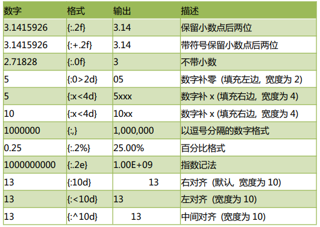
可变字符串¶
在 Python 中，字符串属于不可变对象，不支持原地修改，如果需要修改其中的值，只能创建新的字符串对象。但是，经常我们确实需要原地修改字符串，可以使用 io.StringIO 对象或 array 模块。
>>> import io
>>> s = "hello, sxt"
>>> sio = io.StringIO(s)
>>> sio
<_io.StringIO object at 0x02F462B0>
>>> sio.getvalue()
'hello, sxt'
>>> sio.seek(7)
7
>>> sio.write("g")
1
>>> sio.getvalue()
'hello, gxt'
序列¶
序列是一种数据存储方式，用来存储一系列的数据。在内存中，序列就是一块用来存放多个值的连续的内存空间。比如一个整数序列[10,20,30,40]，可以这样示意表示：
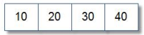
由于 Python3 中一切皆对象，在内存中实际是按照如下方式存储的：
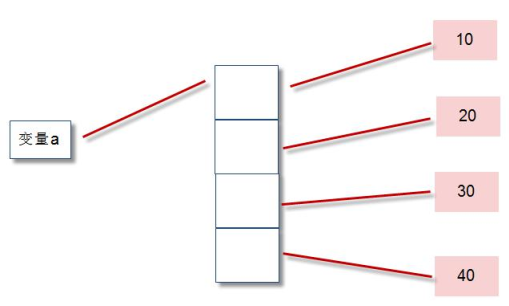
从图示中，我们可以看出序列中存储的是整数对象的地址，而不是整数对象的值。python中常用的序列结构有：
字符串、列表、元组、字典、集合
我们上一章学习的字符串就是一种序列。关于字符串里面很多操作，在这一章中仍然会用到，大家一定会感觉非常熟悉。
本章内容，我们必须非常熟悉。无论是在学习还是工作中，序列都是每天都会用到的技术，可以非常方便的帮助我们进行数据存储的操作。
列表简介¶
列表：用于存储任意数目、任意类型的数据集合。
列表是内置可变序列，是包含多个元素的有序连续的内存空间。列表定义的标准语法格式：
a = [10,20,30,40]
其中，10,20,30,40 这些称为：列表 a 的元素。
列表中的元素可以各不相同，可以是任意类型。比如：
a = [10,20,'abc',True]
列表对象的常用方法汇总如下，方便大家学习和查阅。
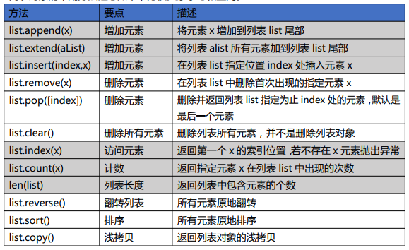
Python 的列表大小可变，根据需要随时增加或缩小。
字符串和列表都是序列类型，一个字符串是一个字符序列，一个列表是任何元素的序列。我们前面学习的很多字符串的方法，在列表中也有类似的用法，几乎一模一样。
列表的创建¶
基本语法[]创建¶
>>> a = [10,20,'gaoqi','sxt']
>>> a = [] #创建一个空的列表对象
list()创建¶
使用 list()可以将任何可迭代的数据转化成列表。
>>> a = list() #创建一个空的列表对象
>>> a = list(range(10))
>>> a
[0, 1, 2, 3, 4, 5, 6, 7, 8, 9]
>>> a = list("gaoqi,sxt")
>>> a
['g', 'a', 'o', 'q', 'i', ',', 's', 'x', 't']
range()创建整数列表¶
range()可以帮助我们非常方便的创建整数列表，这在开发中及其有用。语法格式为：
range([start,] end [,step])
start 参数：可选，表示起始数字。默认是 0
end 参数：必选，表示结尾数字。
step 参数：可选，表示步长，默认为 1
python3 中 range()返回的是一个 range 对象，而不是列表。我们需要通过 list()方法将其转换成列表对象。
典型示例如下：
>>> list(range(3,15,2))
[3, 5, 7, 9, 11, 13]
>>> list(range(15,3,-1))
[15, 14, 13, 12, 11, 10, 9, 8, 7, 6, 5, 4]
>>> list(range(3,-10,-1))
[3, 2, 1, 0, -1, -2, -3, -4, -5, -6, -7, -8, -9]
推导式生成列表¶
使用列表推导式可以非常方便的创建列表，在开发中经常使用。但是，由于涉及到 for 循环和 if 语句。在此，仅做基本介绍。在我们控制语句后面，会详细讲解更多列表推导式的细节。
>>> a = [x*2 for x in range(5)] #循环创建多个元素
>>> a
[0, 2, 4, 6, 8]
>>> a = [x*2 for x in range(100) if x%9==0] #通过 if 过滤元素
>>> a
[0, 18, 36, 54, 72, 90, 108, 126, 144, 162, 180, 198]
列表元素的增加¶
当列表增加和删除元素时，列表会自动进行内存管理，大大减少了程序员的负担。但这个特点涉及列表元素的大量移动，效率较低。除非必要，我们一般只在列表的尾部添加元素或删除元素，这会大大提高列表的操作效率。
append()方法¶
原地修改列表对象，是真正的列表尾部添加新的元素，速度最快，推荐使用。
>>> a = [20,40]
>>> a.append(80)
>>> a
[20, 40, 80]
+运算符操作¶
并不是真正的尾部添加元素，而是创建新的列表对象；将原列表的元素和新列表的元素依次复制到新的列表对象中。这样，会涉及大量的复制操作，对于操作大量元素不建议使用。
>>> a = [20,40]
>>> id(a)
46016072
>>> a = a+[50]
>>> id(a)
46015432
extend()方法¶
将目标列表的所有元素添加到本列表的尾部，属于原地操作，不创建新的列表对象。
>>> a = [20,40]
>>> id(a)
46016072
>>> a.extend([50,60])
>>> id(a)
46016072
insert()插入元素¶
使用 insert()方法可以将指定的元素插入到列表对象的任意制定位置。这样会让插入位置后面所有的元素进行移动，会影响处理速度。涉及大量元素时，尽量避免使用。类似发生这种移动的函数还有：remove()、pop()、del()，它们在删除非尾部元素时也会发生操作位置后面元素的移动。
>>> a = [10,20,30]
>>> a.insert(2,100)
>>> a
[10, 20, 100, 30]
乘法扩展¶
使用乘法扩展列表，生成一个新列表，新列表元素时原列表元素的多次重复。
>>> a = ['sxt',100]
>>> b = a*3
>>> a
['sxt', 100]
>>> b
['sxt', 100, 'sxt', 100, 'sxt', 100]
>>> c = 'sxt'
>>> d = c*3
>>> c
'sxt'
>>> d
'sxtsxtsxt'
列表元素的删除¶
del 删除¶
删除列表指定位置的元素。
>>> a = [100,200,888,300,400]
>>> del a[2]
>>> a
[100,200,300,400]
pop()方法¶
pop()删除并返回指定位置元素，如果未指定位置则默认操作列表最后一个元素。
>>> a = [10,20,30,40,50]
>>> a.pop()
50
>>> a
[10, 20, 30, 40]
>>> a.pop(1)
20
>>> a
[10, 30, 40]
remove()方法¶
删除首次出现的指定元素，若不存在该元素抛出异常。
>>> a = [10,20,30,40,50,20,30,20,30]
>>> a.remove(20)
>>> a
[10, 30, 40, 50, 20, 30, 20, 30]
>>> a.remove(100)
Traceback (most recent call last):
File "<pyshell#208>", line 1, in <module>
a.remove(100)
ValueError: list.remove(x): x not in list
列表元素访问和计数¶
通过索引直接访问元素¶
我们可以通过索引直接访问元素。索引的区间在[0, 列表长度-1]这个范围。超过这个范围则会抛出异常。
>>> a = [10,20,30,40,50,20,30,20,30]
>>> a[2]
30
>>> a[10]
Traceback (most recent call last):
File "<pyshell#211>", line 1, in <module>
a[10]
IndexError: list index out of range
index()获得指定元素在列表中首次出现的索引¶
index()可以获取指定元素首次出现的索引位置。语法是：index(value,[start,[end]])。其中，start 和 end 指定了搜索的范围。
>>> a = [10,20,30,40,50,20,30,20,30]
>>> a.index(20)
1
>>> a.index(20,3)
5
>>> a.index(20,3) #从索引位置 3 开始往后搜索的第一个 20
5
>>> a.index(30,5,7) #从索引位置 5 到 7 这个区间，第一次出现 30 元素的位置
6
count()获得指定元素在列表中出现的次数¶
count()可以返回指定元素在列表中出现的次数。
>>> a = [10,20,30,40,50,20,30,20,30]
>>> a.count(20)
3
len()返回列表长度¶
len()返回列表长度，即列表中包含元素的个数。
>>> a = [10,20,30]
>>> len(a)
3
成员资格判断¶
判断列表中是否存在指定的元素，我们可以使用 count()方法，返回 0 则表示不存在，返回大于 0 则表示存在。但是，一般我们会使用更加简洁的 in 关键字来判断，直接返回 True 或 False。
>>> a = [10,20,30,40,50,20,30,20,30]
>>> 20 in a
True
>>> 100 not in a
True
>>> 30 not in a
False
切片操作¶
我们在前面学习字符串时，学习过字符串的切片操作，对于列表的切片操作和字符串类似。
切片是 Python 序列及其重要的操作，适用于列表、元组、字符串等等。切片的格式如下：
切片 slice 操作可以让我们快速提取子列表或修改。标准格式为：
[起始偏移量 start:终止偏移量 end[:步长 step]]
注：当步长省略时顺便可以省略第二个冒号
典型操作(三个量为正数的情况)如下：
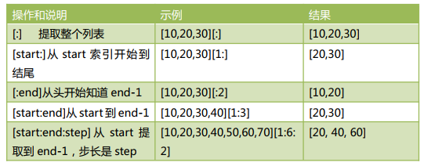
其他操作（三个量为负数）的情况：
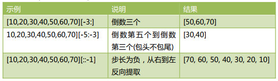
切片操作时，起始偏移量和终止偏移量不在[0,字符串长度-1]这个范围，也不会报错。起始偏移量小于 0 则会当做 0，终止偏移量大于“长度-1”会被当成”长度-1”。例如：
>>> [10,20,30,40][1:30]
[20, 30, 40]
列表的遍历¶
for obj in listObj:
print(obj)
复制列表所有的元素到新列表对象¶
如下代码实现列表元素的复制了吗？
list1 = [30,40,50]
list2 = list1
我们可以通过如下简单方式，实现列表元素内容的复制：
list1 = [30,40,50]
list2 = [] + list1
列表排序¶
修改原列表，不建新列表的排序¶
>>> a = [20,10,30,40]
>>> id(a)
46017416
>>> a.sort() #默认是升序排列
>>> a
[10, 20, 30, 40]
>>> a = [10,20,30,40]
>>> a.sort(reverse=True) #降序排列
>>> a
[40, 30, 20, 10]
>>> import random
>>> random.shuffle(a) #打乱顺序
>>> a
[20, 40, 30, 10]
建新列表的排序¶
我们也可以通过内置函数 sorted()进行排序，这个方法返回新列表，不对原列表做修改。
>>> a = [20,10,30,40]
>>> id(a)
46016008
>>> a = sorted(a) #默认升序
>>> a
[10, 20, 30, 40]
>>> id(a)
45907848
>>> a = [20,10,30,40]
>>> id(a)
45840584
>>> b = sorted(a)
>>> b
[10, 20, 30, 40]
>>> id(a)
45840584
>>> id(b)
46016072
>>> c = sorted(a,reverse=True) #降序
>>> c
[40, 30, 20, 10]
reversed()返回迭代器¶
内置函数 reversed()也支持进行逆序排列，与列表对象 reverse()方法不同的是，内置函数reversed()不对原列表做任何修改，只是返回一个逆序排列的迭代器对象。
>>> a = [20,10,30,40]
>>> c = reversed(a)
>>> c
<list_reverseiterator object at 0x0000000002BCCEB8>
>>> list(c)
[40, 30, 10, 20]
>>> list(c)
[]
注：关于迭代对象的使用，后续章节会进行详细讲解。
列表相关的其他内置函数汇总¶
max 和 min¶
用于返回列表中最大和最小值。
[40, 30, 20, 10]
>>> a = [3,10,20,15,9]
>>> max(a)
20
>>> min(a)
3
sum¶
对数值型列表的所有元素进行求和操作，对非数值型列表运算则会报错。
>>> a = [3,10,20,15,9]
>>> sum(a)
57
多维列表¶
二维列表¶
一维列表可以帮助我们存储一维、线性的数据。
二维列表可以帮助我们存储二维、表格的数据。例如下表的数据：
| 姓名 | 年龄 | 薪资 | 城市 |
|---|---|---|---|
| 高小一 | 18 | 30000 | 北京 |
| 高小二 | 19 | 20000 | 上海 |
| 高小五 | 20 | 10000 | 深圳 |
源码：
a = [
["高小一",18,30000,"北京"],
["高小二",19,20000,"上海"],
["高小一",20,10000,"深圳"],
]
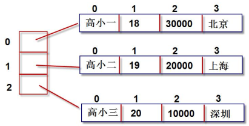
>>> print(a[1][0],a[1][1],a[1][2])
高小二 19 20000
嵌套循环打印二维列表所有的数据（mypy_08.py）（由于没有学循环，照着敲一遍即可）：
a = [
["高小一",18,30000,"北京"],
["高小二",19,20000,"上海"],
["高小一",20,10000,"深圳"],
]
for m in range(3):
for n in range(4):
print(a[m][n],end="\t")
print() #打印完一行，换行
高小一 18 30000 北京
高小二 19 20000 上海
高小一 20 10000 深圳
元组 tuple¶
列表属于可变序列，可以任意修改列表中的元素。元组属于不可变序列，不能修改元组中的元素。因此，元组没有增加元素、修改元素、删除元素相关的方法。
因此，我们只需要学习元组的创建和删除，元组中元素的访问和计数即可。元组支持如下操作：
- 索引访问
- 切片操作
- 连接操作
- 成员关系操作
- 比较运算操作
- 计数：元组长度 len()、最大值 max()、最小值 min()、求和 sum()等。
元组的创建¶
-
通过()创建元组。小括号可以省略。
a = (10,20,30) 或者 a = 10,20,30
如果元组只有一个元素，则必须后面加逗号。这是因为解释器会把(1)解释为整数 1，(1,)解释为元组。>>> a = (1) >>> type(a) <class 'int'> >>> a = (1,) #或者 a = 1, >>> type(a) <class 'tuple'> -
通过 tuple()创建元组
tuple(可迭代的对象)
例如：
b = tuple() #创建一个空元组对象 b = tuple("abc") b = tuple(range(3)) b = tuple([2,3,4])
总结：
tuple()可以接收列表、字符串、其他序列类型、迭代器等生成元组。
list()可以接收元组、字符串、其他序列类型、迭代器等生成列表。
元组的元素访问和计数¶
-
元组的元素不能修改
>>> a = (20,10,30,9,8) >>> a[3]=33 Traceback (most recent call last): File "<pyshell#313>", line 1, in <module> a[3]=33 TypeError: 'tuple' object does not support item assignment -
元组的元素访问和列表一样，只不过返回的仍然是元组对象。
>>> a = (20,10,30,9,8) >>> a[1] 10 >>> a[1:3] (10, 30) >>> a[:4] (20, 10, 30, 9) -
列表关于排序的方法 list.sorted()是修改原列表对象，元组没有该方法。如果要对元组排序，只能使用内置函数 sorted(tupleObj)，并生成新的列表对象。
>>> a = (20,10,30,9,8) >>> sorted(a) [8, 9, 10, 20, 30]
zip¶
zip(列表 1，列表 2，...)将多个列表对应位置的元素组合成为元组，并返回这个 zip 对象。
>>> a = [10,20,30]
>>> b = [40,50,60]
>>> c = [70,80,90]
>>> d = zip(a,b,c)
>>> list(d)
[(10, 40, 70), (20, 50, 80), (30, 60, 90)]
生成器推导式创建元组¶
从形式上看，生成器推导式与列表推导式类似，只是生成器推导式使用小括号。列表推导式直接生成列表对象，生成器推导式生成的不是列表也不是元组，而是一个生成器对象。
我们可以通过生成器对象，转化成列表或者元组。也可以使用生成器对象的__next__()方法进行遍历，或者直接作为迭代器对象来使用。不管什么方式使用，元素访问结束后，如果需要重新访问其中的元素，必须重新创建该生成器对象。
【操作】生成器的使用测试
>>> s = (x*2 for x in range(5))
>>> s
<generator object <genexpr> at 0x0000000002BDEB48>
>>> tuple(s)
(0, 2, 4, 6, 8)
>>> list(s) #只能访问一次元素。第二次就为空了。需要再生成一次[]
>>> s
<generator object <genexpr> at 0x0000000002BDEB48>
>>> tuple(s)
()
>>> s = (x*2 for x in range(5))
>>> s.__next__()
0
>>> s.__next__()
2
>>> s.__next__()
4
元组总结¶
- 元组的核心特点是：不可变序列。
- 元组的访问和处理速度比列表快。
- 与整数和字符串一样，元组可以作为字典的键，列表则永远不能作为字典的键使用。
字典介绍¶
字典是“键值对”的无序可变序列，字典中的每个元素都是一个“键值对”，包含：“键对象”和“值对象”。可以通过“键对象”实现快速获取、删除、更新对应的“值对象”。
列表中我们通过“下标数字”找到对应的对象。字典中通过“键对象”找到对应的“值对象”。“键”是任意的不可变数据，比如：整数、浮点数、字符串、元组。但是：列表、字典、集合这些可变对象，不能作为“键”。并且“键”不可重复。
“值”可以是任意的数据，并且可重复。
一个典型的字典的定义方式：
a = {'name':'gaoqi','age':18,'job':'programmer'}
字典的创建¶
-
我们可以通过{}、dict()来创建字典对象。
>>> a = {'name':'gaoqi','age':18,'job':'programmer'} >>> b = dict(name='gaoqi',age=18,job='programmer') >>> a = dict([("name","gaoqi"),("age",18)]) >>> c = {} #空的字典对象 >>> d = dict() #空的字典对象 -
通过 zip()创建字典对象
>>> k = ['name','age','job'] >>> v = ['gaoqi',18,'techer'] >>> d = dict(zip(k,v)) >>> d {'name': 'gaoqi', 'age': 18, 'job': 'techer'} -
通过 fromkeys 创建值为空的字典
>>> a = dict.fromkeys(['name','age','job']) >>> a {'name': None, 'age': None, 'job': None}
字典元素的访问¶
为了测试各种访问方法，我们这里设定一个字典对象：
a = {'name':'gaoqi','age':18,'job':'programmer'}
-
通过 [键] 获得“值”。若键不存在，则抛出异常。
>>> a = {'name':'gaoqi','age':18,'job':'programmer'} >>> a['name'] 'gaoqi' >>> a['age'] 18 >>> a['sex'] Traceback (most recent call last): File "<pyshell#374>", line 1, in <module> a['sex'] KeyError: 'sex' -
通过 get()方法获得“值”。推荐使用。优点是：指定键不存在，返回 None；也可以设定指定键不存在时默认返回的对象。推荐使用 get()获取“值对象”。
>>> a.get('name') 'gaoqi' >>> a.get('sex') >>> a.get('sex','一个男人') '一个男人' -
列出所有的键值对
>>> a.items() dict_items([('name', 'gaoqi'), ('age', 18), ('job', 'programmer')]) -
列出所有的键，列出所有的值
>>> a.keys() dict_keys(['name', 'age', 'job']) >>> a.values() dict_values(['gaoqi', 18, 'programmer']) -
len() 键值对的个数
-
检测一个“键”是否在字典中
>>> a = {"name":"gaoqi","age":18} >>> "name" in a True
字典元素添加、修改、删除¶
-
给字典新增“键值对”。如果“键”已经存在，则覆盖旧的键值对；如果“键”不存在，则新增“键值对”。
>>>a = {'name':'gaoqi','age':18,'job':'programmer'} >>> a['address']='西三旗 1 号院' >>> a['age']=16 >>> a {'name': 'gaoqi', 'age': 16, 'job': 'programmer', 'address': '西三旗 1 号院'} -
使用 update()将新字典中所有键值对全部添加到旧字典对象上。如果 key 有重复，则直接覆盖。
>>> a = {'name':'gaoqi','age':18,'job':'programmer'} >>> b = {'name':'gaoxixi','money':1000,'sex':'男的'} >>> a.update(b) >>> a {'name': 'gaoxixi', 'age': 18, 'job': 'programmer', 'money': 1000, 'sex': '男的'} -
字典中元素的删除，可以使用 del()方法；或者 clear()删除所有键值对；pop()删除指定键值对，并返回对应的“值对象”；
>>> a = {'name':'gaoqi','age':18,'job':'programmer'} >>> del(a['name']) >>> a {'age': 18, 'job': 'programmer'} >>> b = a.pop('age') >>> b 18 -
popitem() ：随机删除和返回该键值对。字典是“无序可变序列”，因此没有第一个元素、最后一个元素的概念；popitem 弹出随机的项，因为字典并没有"最后的元素"或者其他有关顺序的概念。若想一个接一个地移除并处理项，这个方法就非常有效（因为不用首先获取键的列表）。
>>> a = {'name':'gaoqi','age':18,'job':'programmer'} >>> a.popitem() ('job', 'programmer') >>> a {'name': 'gaoqi', 'age': 18} >>> a.popitem() ('age', 18) >>> a {'name': 'gaoqi'}
序列解包¶
序列解包可以用于元组、列表、字典。序列解包可以让我们方便的对多个变量赋值。
>>> x,y,z=(20,30,10)
>>> x
20
>>> y
30
>>> z
10
>>> (a,b,c)=(9,8,10)
>>> a
9 >
>> [a,b,c]=[10,20,30]
>>> a
10
>>> b
20
序列解包用于字典时，默认是对“键”进行操作； 如果需要对键值对操作，则需要使用items()；如果需要对“值”进行操作，则需要使用 values()；
>>> s = {'name':'gaoqi','age':18,'job':'teacher'}
>>> name,age,job=s #默认对键进行操作
>>> name
'name'
>>> name,age,job=s.items() #对键值对进行操作
>>> name
('name', 'gaoqi')
>>> name,age,job=s.values() #对值进行操作
>>> name
'gaoqi'
表格数据使用字典和列表存储，并实现访问¶
| 姓名 | 年龄 | 薪资 | 城市 |
|---|---|---|---|
| 高小一 | 18 | 30000 | 北京 |
| 高小二 | 19 | 20000 | 上海 |
| 高小五 | 20 | 10000 | 深圳 |
源代码（mypy_09.py）：
r1 = {"name":"高小一","age":18,"salary":30000,"city":"北京"}
r2 = {"name":"高小二","age":19,"salary":20000,"city":"上海"}
r3 = {"name":"高小五","age":20,"salary":10000,"city":"深圳"}
tb = [r1,r2,r3]
#获得第二行的人的薪资
print(tb[1].get("salary"))
#打印表中所有的的薪资
for i in range(len(tb)): # i -->0,1,2
print(tb[i].get("salary"))
#打印表的所有数据
for i in range(len(tb)):
print(tb[i].get("name"),tb[i].get("age"),tb[i].get("salary"),tb[i].get("city"))
控制语句¶
我们在前面学习的过程中，都是很短的示例代码，没有进行复杂的操作。现在，我们将开始学习流程控制语句。
前面学习的变量、数据类型（整数、浮点数、布尔）、序列（字符串、列表、元组、字典、集合），可以看做是数据的组织方式。数据可以看做是“砖块”！
流程控制语句是代码的组织方式，可以看做是“混凝土”。
一个完整的程序，离不开“砖块”，也离不开“混凝土”。他们的组合，才能让我们建立从小到“一个方法”，大到“操作系统”，这样各种各样的“软件”。
选择结构¶
选择结构通过判断条件是否成立，来决定执行哪个分支。选择结构有多种形式，分为：单分支、双分支、多分支。流程图如下：
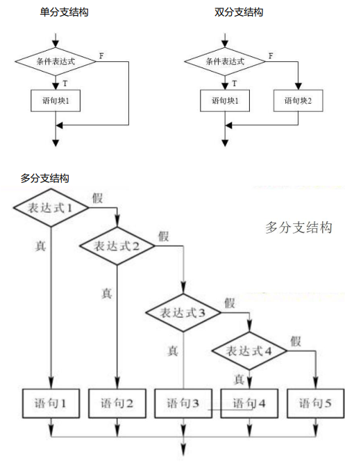
单分支选择结构¶
if 语句单分支结构的语法形式如下：
if 条件表达式:
....语句/语句块
其中：
- 条件表达式：可以是逻辑表达式、关系表达式、算术表达式等等。
- 语句/语句块：可以是一条语句，也可以是多条语句。多条语句，缩进必须对齐一致。
【操作】输入一个数字，小于 10，则打印这个数字(if_test01.py)
num = input("输入一个数字：")
if int(num)<10:
print(num)
条件表达式详解¶
在选择和循环结构中，条件表达式的值为 False 的情况如下：
False、0、0.0、空值 None、空序列对象（空列表、空元祖、空集合、空字典、空字符串）、空 range 对象、空迭代对象。
其他情况，均为 True。这么看来，Python 所有的合法表达式都可以看做条件表达式，甚至包括函数调用的表达式。
【操作】测试各种条件表达式
if 3: #整数作为条件表达式
print("ok")
a = [] #列表作为条件表达式，由于为空列表，是 False
if a:
print("空列表，False")
s = "False" #非空字符串，是 True
if s:
print("非空字符串，是 True")
c = 9
if 3<c<20:
print("3<c<20")
if 3<c and c<20:
print("3<c and c<20")
if True: #布尔值
print("True")
ok
非空字符串，是 True
3<c<20
3<c and c<20
True
>>>
条件表达式中，不能有赋值操作符“=”
在 Python 中，条件表达式不能出现赋值操作符“=”，避免了其他语言中经常误将关系运算符“==”写作赋值运算符“=”带来的困扰。如下代码将会报语法错误：
if 3<c and (c=20):
print("赋值符不能出现在条件表达式中")
双分支选择结构¶
双分支结构的语法格式如下：
if 条件表达式 :
....语句 1/语句块 1
else:
....语句 2/语句块 2
【操作】输入一个数字，小于 10，则打印该数字；大于 10，则打印“数字太大”
num = input("输入一个数字：")
if int(num)<10:
print(num)
else:
print("数字太大")
三元条件运算符¶
Python 提供了三元运算符，用来在某些简单双分支赋值情况。三元条件运算符语法格式如下：
条件为真时的值 if (条件表达式) else 条件为假时的值
上一个案例代码，可以用三元条件运算符实现：
num = input("请输入一个数字")
print( num if int(num)<10 else "数字太大")
多分支选择结构¶
多分支选择结构的语法格式如下：
if 条件表达式 1 :
....语句 1/语句块 1
elif 条件表达式 2:
....语句 2/语句块 2
elif 条件表达式 n :
....语句 n/语句块 n
[else:
....语句 n+1/语句块 n+1
]
【操作】输入一个学生的成绩，将其转化成简单描述：不及格(小于 60)、及格(60-79)、良好(80-89)、优秀(90-100)。 方法 1（使用完整的条件表达）
score = int(input("请输入分数"))
grade = ''
if(score<60):
grade = "不及格"
if(60<=score<80):
grade = "及格"
if(80<=score<90):
grade = "良好"
if(90<=score<=100):
grade = "优秀"
print("分数是{0},等级是{1}".format(score,grade))
方法 2（利用多分支结构）
score = int(input("请输入分数"))
grade = ''
if score<60 :
grade = "不及格"
elif score<80 :
grade = "及格"
elif score<90 :
grade = "良好"
elif score<=100:
grade = "优秀"
print("分数是{0},等级是{1}".format(score,grade))
多分支结构，几个分支之间是有逻辑关系的，不能随意颠倒顺序。
【操作】已知点的坐标(x,y)，判断其所在的象限
x = int(input("请输入 x 坐标"))
y = int(input("请输入 y 坐标"))
if(x==0 and y==0):print("原点")
elif(x==0):print("y 轴")
elif(y==0):print("x 轴")
elif(x>0 and y>0):print("第一象限")
elif(x<0 and y>0):print("第二象限")
elif(x<0 and y<0):print("第三象限")
else:
print("第四象限")
选择结构嵌套¶
选择结构可以嵌套，使用时一定要注意控制好不同级别代码块的缩进量，因为缩进量决定了代码的从属关系。
【操作】输入一个分数。分数在 0-100 之间。90 以上是 A,80 以上是 B，70 以上是 C，60 以上是 D。60 以下是 E。
score = int(input("请输入一个在 0-100 之间的数字： "))
grade = ""
if score>100 or score<0:
score = int(input("输入错误！ 请重新输入一个在 0-100 之间的数字： "))
else:
if score>=90:
grade = "A"
elif score>=80:
grade = 'B'
elif score>=70:
grade = 'C'
elif score>=60:
grade = 'D'
else:
grade = 'E'
print("分数为{0},等级为{1}".format(score,grade))
score = int(input("请输入一个在 0-100 之间的数字： "))
degree = "ABCDE"
num = 0
if score>100 or score<0:
score = int(input("输入错误！ 请重新输入一个在 0-100 之间的数字： "))
else:
num = score//10
if num<6:num=5
print("分数是{0},等级是{1}".format(score,degree[9-num]))
循环结构¶
循环结构用来重复执行一条或多条语句。表达这样的逻辑：如果符合条件，则反复执行循环体里的语句。在每次执行完后都会判断一次条件是否为 True，如果为 True 则重复执行循环体里的语句。
循环体里面的语句至少应该包含改变条件表达式的语句，以使循环趋于结束；否则，就会变成一个死循环。
while 循环¶
【操作】利用 while 循环打印从 0-10 的数字。
num = 0
while num<=10:
print(num)
num += 1
num = 0
sum_all = 0 #1-100 所有数的累加和
sum_even = 0 #1-100 偶数的累加和
sum_odd = 0 #1-100 奇数的累加和
while num<=100:
sum_all += num
if num%2==0:sum_even += num
else:sum_odd += num
num += 1 #迭代，改变条件表达式，使循环趋于结束
print("1-100 所有数的累加和",sum_all)
print("1-100 偶数的累加和",sum_even)
print("1-100 奇数的累加和",sum_odd)
for 循环和可迭代对象遍历¶
for 循环通常用于可迭代对象的遍历。
【操作】遍历一个元组或列表
for x in (20,30,40):
print(x*3)
可迭代对象¶
Python 包含以下几种可迭代对象：
- 序列。包含：字符串、列表、元组
- 字典
- 迭代器对象（iterator）
- 生成器函数（generator）
- 文件对象
我们已经在前面学习了序列、字典等知识，迭代器对象和生成器函数将在后面进行详解。接下来，我们通过循环来遍历这几种类型的数据：
【操作】遍历字符串中的字符
for x in "sxt001":
print(x)
d = {'name':'gaoqi','age':18,'address':'西三旗 001 号楼'}
for x in d: #遍历字典所有的 key
print(x)
for x in d.keys():#遍历字典所有的 key
print(x)
for x in d.values():#遍历字典所有的 value
print(x)
for x in d.items():#遍历字典所有的"键值对"
print(x)
range 对象¶
range 对象是一个迭代器对象，用来产生指定范围的数字序列。格式为：
range(start, end [,step])
生成的数值序列从 start 开始到 end 结束（不包含 end）。若没有填写 start，则默认从 0开始。step 是可选的步长，默认为 1。如下是几种典型示例：
for i in range(10) 产生序列：0 1 2 3 4 5 6 7 8 9
for i in range(3,10) 产生序列：3 4 5 6 7 8 9
for i in range(3,10,2) 产生序列：3 5 7 9
【操作】利用 for 循环，计算 1-100 之间数字的累加和；计算 1-100 之间偶数的累加和，计算 1-100 之间奇数的累加和。
sum_all = 0 #1-100 所有数的累加和
sum_even = 0 #1-100 偶数的累加和
sum_odd = 0 #1-100 奇数的累加和
for num in range(101):
sum_all += num
if num%2==0:sum_even += num
else:sum_odd += num
print("1-100 累加总和{0},奇数和{1},偶数和{2}".format(sum_all,sum_odd,sum_even))
嵌套循环和综合练习¶
一个循环体内可以嵌入另一个循环，一般称为“嵌套循环”，或者“多重循环”。
【操作】打印如下图案
0 0 0 0 0
1 1 1 1 1
2 2 2 2 2
3 3 3 3 3
4 4 4 4 4
for x in range(5):
for y in range(5):
print(x,end="\t")
print() #仅用于换行
【操作】利用嵌套循环打印九九乘法表
for m in range(1,10):
for n in range(1,m+1):
print("{0}*{1}={2}".format(m,n,(m*n)),end="\t")
print()
1*1=1
2*1=2 2*2=4
3*1=3 3*2=6 3*3=9
4*1=4 4*2=8 4*3=12 4*4=16
5*1=5 5*2=10 5*3=15 5*4=20 5*5=25
6*1=6 6*2=12 6*3=18 6*4=24 6*5=30 6*6=36
7*1=7 7*2=14 7*3=21 7*4=28 7*5=35 7*6=42 7*7=49
8*1=8 8*2=16 8*3=24 8*4=32 8*5=40 8*6=48 8*7=56 8*8=64
9*1=9 9*2=18 9*3=27 9*4=36 9*5=45 9*6=54 9*7=63 9*8=72 9*9=81
【操作】用列表和字典存储下表信息，并打印出表中工资高于 15000 的数据
| 姓名 | 年龄 | 薪资 | 城市 |
|---|---|---|---|
| 高小一 | 18 | 30000 | 北京 |
| 高小二 | 19 | 20000 | 上海 |
| 高小五 | 20 | 10000 | 深圳 |
r1= dict(name="高小一",age=18,salary=30000,city="北京")
r2= dict(name="高小二",age=19,salary=20000,city="上海")
r3= dict(name="高小三",age=20,salary=10000,city="深圳")
tb = [r1,r2,r3]
for x in tb:
if x.get("salary")>15000:
print(x)
break 语句¶
break 语句可用于 while 和 for 循环，用来结束整个循环。当有嵌套循环时，break 语句只能跳出最近一层的循环。
【操作】使用 break 语句结束循环
while True:
a = input("请输入一个字符（输入 Q 或 q 结束）")
if a.upper()=='Q':
print("循环结束，退出")
break
else:
print(a)
continue 语句¶
continue 语句用于结束本次循环，继续下一次。多个循环嵌套时，continue 也是应用于最近的一层循环。
【操作】要求输入员工的薪资，若薪资小于 0 则重新输入。最后打印出录入员工的数量和薪资明细，以及平均薪资
empNum = 0
salarySum= 0
salarys = []
while True:
s = input("请输入员工的薪资（按 Q 或 q 结束）")
if s.upper()=='Q':
print("录入完成，退出")
break
if float(s)<0:
continue
empNum +=1
salarys.append(float(s))
salarySum += float(s)
print("员工数{0}".format(empNum))
print("录入薪资：",salarys)
print("平均薪资{0}".format(salarySum/empNum))
请输入员工的薪资（按 Q 或 q 结束）2000
请输入员工的薪资（按 Q 或 q 结束）3000
请输入员工的薪资（按 Q 或 q 结束）4000
请输入员工的薪资（按 Q 或 q 结束）5000
请输入员工的薪资（按 Q 或 q 结束）Q
录入完成，退出
员工数 4
录入薪资： [2000.0, 3000.0, 4000.0, 5000.0]
平均薪资 3500.0
else 语句¶
while、for 循环可以附带一个 else 语句（可选）。如果 for、while 语句没有被 break 语句结束，则会执行 else 子句，否则不执行。
【操作】员工一共 4 人。录入这 4 位员工的薪资。全部录入后，打印提示“您已经全部录入 4 名员工的薪资”。最后，打印输出录入的薪资和平均薪资
salarySum= 0
salarys = []
for i in range(4):
s = input("请输入一共 4 名员工的薪资（按 Q 或 q 中途结束）")
if s.upper()=='Q':
print("录入完成，退出")
break
if float(s)<0:
continue
salarys.append(float(s))
salarySum += float(s)
else:
print("您已经全部录入 4 名员工的薪资")
print("录入薪资：",salarys)
print("平均薪资{0}".format(salarySum/4))
循环代码优化¶
虽然计算机越来越快，空间也越来越大，我们仍然要在性能问题上“斤斤计较”。编写循环时，遵守下面三个原则可以大大提高运行效率，避免不必要的低效计算：
- 尽量减少循环内部不必要的计算
- 嵌套循环中，尽量减少内层循环的计算，尽可能向外提。
- 局部变量查询较快，尽量使用局部变量
#循环代码优化测试
import time
start = time.time()
for i in range(1000):
result = []
for m in range(10000):
result.append(i*1000+m*100)
end = time.time()
print("耗时： {0}".format((end-start)))
start2 = time.time()
for i in range(1000):
result = []
c = i*1000
for m in range(10000):
result.append(c+m*100)
end2 = time.time()
print("耗时： {0}".format((end2-start2)))
其他优化手段¶
- 连接多个字符串， 使用 join()而不使用+
- 列表进行元素插入和删除， 尽量在列表尾部操作
使用 zip()并行迭代¶
我们可以通过 zip()函数对多个序列进行并行迭代，zip()函数在最短序列“用完”时就会停止。
【操作】测试 zip()并行迭代
names = ("高淇","高老二","高老三","高老四")
ages = (18,16,20,25)
jobs = ("老师","程序员","公务员")
for name,age,job in zip(names,ages,jobs):
print("{0}--{1}--{2}".format(name,age,job))
高淇--18--老师
高老二--16--程序员
高老三--20--公务员
推导式创建序列¶
推导式是从一个或者多个迭代器快速创建序列的一种方法。它可以将循环和条件判断结合，从而避免冗长的代码。推导式是典型的 Python 风格，会使用它代表你已经超过 Python 初学者的水平。
列表推导式¶
列表推导式生成列表对象，语法如下：
[表达式 for item in 可迭代对象 ]
或者：{表达式 for item in 可迭代对象 if 条件判断}
>>> [x for x in range(1,5)]
[1, 2, 3, 4]
>>> [x*2 for x in range(1,5)]
[2, 4, 6, 8]
>>> [x*2 for x in range(1,20) if x%5==0 ]
[10, 20, 30]
>>> [a for a in "abcdefg"]
['a', 'b', 'c', 'd', 'e', 'f', 'g']
>>> cells = [(row,col) for row in range(1,10) for col in range(1,10)] #可以使用两个循环
>>> for cell in cells:
print(cell)
字典推导式¶
字典的推导式生成字典对象，格式如下：
{key_expression : value_expression for 表达式 in 可迭代对象}
类似于列表推导式，字典推导也可以增加 if 条件判断、多个 for 循环。
统计文本中字符出现的次数：
>>> my_text = ' i love you, i love sxt, i love gaoqi'
>>> char_count = {c:my_text.count(c) for c in my_text}
>>> char_count
{' ': 9, 'i': 4, 'l': 3, 'o': 5, 'v': 3, 'e': 3, 'y': 1, 'u': 1, ',': 2, 's': 1, 'x': 1, 't': 1, 'g': 1, 'a': 1, 'q': 1}
集合推导式¶
集合推导式生成集合，和列表推导式的语法格式类似：
{表达式 for item in 可迭代对象 }
或者：{表达式 for item in 可迭代对象 if 条件判断}
>>> {x for x in range(1,100) if x%9==0}
{99, 36, 72, 9, 45, 81, 18, 54, 90, 27, 63}
生成器推导式（生成元组）¶
很多同学可能会问：“都有推导式，元组有没有？”，能不能用小括号呢？
>>> (x for x in range(1,100) if x%9==0)
<generator object <genexpr> at 0x0000000002BD3048>
一个生成器只能运行一次。第一次迭代可以得到数据，第二次迭代发现数据已经没有了。
>>> gnt = (x for x in range(1,100) if x%9==0)
>>> for x in gnt:
print(x,end=' ')
9 18 27 36 45 54 63 72 81 90 99
>>> for x in gnt:
print(x,end=' ')
>>>
函数用法和底层分析¶
函数是可重用的程序代码块。函数的作用，不仅可以实现代码的复用，更能实现代码的一致性。一致性指的是，只要修改函数的代码，则所有调用该函数的地方都能得到体现。
在编写函数时，函数体中的代码写法和我们前面讲述的基本一致，只是对代码实现了封装，并增加了函数调用、传递参数、返回计算结果等内容。
为了让大家更容易理解，掌握的更深刻。我们也要深入内存底层进行分析。绝大多数语言内存底层都是高度相似的，这样大家掌握了这些内容也便于以后学习其他语言。
函数简介¶
函数的基本概念¶
- 一个程序由一个个任务组成；函数就是代表一个任务或者一个功能。
- 函数是代码复用的通用机制。
Python 函数的分类¶
Python 中函数分为如下几类：
- 内置函数
我们前面使用的 str()、list()、len()等这些都是内置函数，我们可以拿来直接使用。 - 标准库函数
我们可以通过 import 语句导入库，然后使用其中定义的函数 - 第三方库函数
Python 社区也提供了很多高质量的库。下载安装这些库后，也是通过 import 语句导入，然后可以使用这些第三方库的函数 - 用户自定义函数
用户自己定义的函数，显然也是开发中适应用户自身需求定义的函数。今天我们学习的就是如何自定义函数。
函数的定义和调用¶
核心要点¶
Python 中，定义函数的语法如下：
def 函数名 ([参数列表]) :
....'''文档字符串'''
....函数体/若干语句
要点：
- 我们使用 def 来定义函数，然后就是一个空格和函数名称；
- Python 执行 def 时，会创建一个函数对象，并绑定到函数名变量上。
- 参数列表
- 圆括号内是形式参数列表，有多个参数则使用逗号隔开
- 形式参数不需要声明类型，也不需要指定函数返回值类型
- 无参数，也必须保留空的圆括号
- 实参列表必须与形参列表一一对应
- return 返回值
- 如果函数体中包含 return 语句，则结束函数执行并返回值；
- 如果函数体中不包含 return 语句，则返回 None 值。
- 调用函数之前，必须要先定义函数，即先调用 def 创建函数对象
- 内置函数对象会自动创建
- 标准库和第三方库函数，通过 import 导入模块时，会执行模块中的 def 语句
形参和实参¶
【操作】定义一个函数，实现两个数的比较，并返回较大的值。
def printMax(a,b):
'''实现两个数的比较，并返回较大的值'''
if a>b:
print(a,'较大值')
else:
print(b,'较大值')
printMax(10,20)
printMax(30,5)
20 较大值
30 较大值
上面的 printMax 函数中，在定义时写的 printMax(a,b)。a 和 b 称为“形式参数”，简称“形参”。也就是说，形式参数是在定义函数时使用的。 形式参数的命名只要符合“标识符”命名规则即可。
在调用函数时，传递的参数称为“实际参数”，简称“实参”。上面代码中，printMax(10,20)，10 和 20 就是实际参数。
文档字符串(函数的注释)¶
程序的可读性最重要，一般建议在函数体开始的部分附上函数定义说明，这就是“文档字符串”，也有人成为“函数的注释”。我们通过三个单引号或者三个双引号来实现，中间可以加入多行文字进行说明。
【操作】测试文档字符串的使用
def print_star(n):
'''根据传入的 n，打印多个星号'''
print("*"*n)
help(print_star)
Help on function print_star in module __main__:
print_star(n)
根据传入的 n，打印多个星号
返回值¶
return 返回值要点：
- 如果函数体中包含 return 语句，则结束函数执行并返回值；
- 如果函数体中不包含 return 语句，则返回 None 值。
- 要返回多个返回值，使用列表、元组、字典、集合将多个值“存起来”即可。
【操作】定义一个打印 n 个星号的无返回值的函数
def print_star(n):
print("*"*n)
print_star(5)
【操作】定义一个返回两个数平均值的函数
def my_avg(a,b):
return (a+b)/2
#如下是函数的调用
c = my_avg(20,30)
print(c)
函数也是对象，内存底层分析¶
Python 中，“一切都是对象”。实际上，执行 def 定义函数后，系统就创建了相应的函数对象。我们执行如下程序，然后进行解释：
def print_star(n):
print("*"*n)
print(print_star)
print(id(print_star))
c = print_star
c(3)
<function print_star at 0x0000000002BB8620>
45844000
***
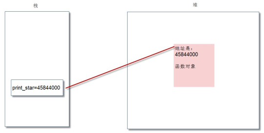
我们执行“c=print_star”后，显然将 print_star 变量的值赋给了变量 c，内存图变成了：
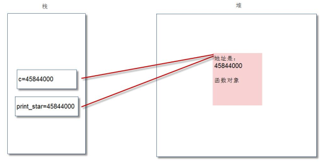
显然，我们可以看出变量 c 和 print_star 都是指向了同一个函数对象。因此，执行 c(3)和执行 print_star(3)的效果是完全一致的。 Python 中，圆括号意味着调用函数。在没有圆括号的情况下，Python 会把函数当做普通对象。
与此核心原理类似，我们也可以做如下操作：
zhengshu = int
zhengshu("234")
变量的作用域¶
变量起作用的范围称为变量的作用域，不同作用域内同名变量之间互不影响。变量分为：全局变量、局部变量。
全局变量：
- 在函数和类定义之外声明的变量。作用域为定义的模块，从定义位置开始直到模块结束。
- 全局变量降低了函数的通用性和可读性。应尽量避免全局变量的使用。
- 全局变量一般做常量使用。
- 函数内要改变全局变量的值，使用 global 声明一下。
局部变量：
- 在函数体中（包含形式参数）声明的变量。
- 局部变量的引用比全局变量快，优先考虑使用。
- 如果局部变量和全局变量同名，则在函数内隐藏全局变量，只使用同名的局部变量
【操作】全局变量的作用域测试
a = 100 #全局变量
def f1():
global a #如果要在函数内改变全局变量的值，增加 global 关键字声明
print(a) #打印全局变量 a 的值
a = 300
f1()
print(a)
100
300
a=100
def f1():
a = 3 #同名的局部变量
print(a)
f1()
print(a) #a 仍然是 100，没有变化
3
100
a = 100
def f1(a,b,c):
print(a,b,c)
print(locals()) #打印输出的局部变量
print("#"*20)
print(globals()) #打印输出的全局变量
f1(2,3,4)
2 3 4
{'c': 4, 'b': 3, 'a': 2}
####################
{'__name__': '__main__', '__doc__': None, '__package__': None, '__loader__': <class
'_frozen_importlib.BuiltinImporter'>, '__spec__': None, '__annotations__': {},
'__builtins__': <module 'builtins' (built-in)>, '__file__': 'E:\\PythonExec\\if_test01.py',
'a': 100, 'f1': <function f1 at 0x0000000002BB8620>}
局部变量和全局变量效率测试¶
局部变量的查询和访问速度比全局变量快，优先考虑使用，尤其是在循环的时候。
在特别强调效率的地方或者循环次数较多的地方，可以通过将全局变量转为局部变量提高运行速度。
【操作】测试局部变量和全局变量效率
#测试局部变量、 全局变量的效率
import math
import time
def test01():
start = time.time()
for i in range(10000000):
math.sqrt(30)
end = time.time()
print("耗时{0}".format((end-start)))
def test02():
b = math.sqrt
start = time.time()
for i in range(10000000):
b(30)
end = time.time()
print("耗时{0}".format((end-start)))
test01()
test02()
耗时 2.3589999675750732
耗时 1.6410000324249268
参数的传递¶
函数的参数传递本质上就是：从实参到形参的赋值操作。 Python 中“一切皆对象”，所有的赋值操作都是“引用的赋值”。所以，Python 中参数的传递都是“引用传递”，不是“值传递”。具体操作时分为两类：
- 对“可变对象”进行“写操作”，直接作用于原对象本身。
- 对“不可变对象”进行“写操作”，会产生一个新的“对象空间”，并用新的值填充这块空间。（起到其他语言的“值传递”效果，但不是“值传递”）
可变对象有：
字典、列表、集合、自定义的对象等
不可变对象有：
数字、字符串、元组、function 等
传递可变对象的引用¶
传递参数是可变对象（例如：列表、字典、自定义的其他可变对象等），实际传递的还是对象的引用。在函数体中不创建新的对象拷贝，而是可以直接修改所传递的对象。
【操作】参数传递：传递可变对象的引用
b = [10,20]
def f2(m):
print("m:",id(m)) #b 和 m 是同一个对象
m.append(30) #由于 m 是可变对象，不创建对象拷贝，直接修改这个对象
f2(b)
print("b:",id(b))
print(b)
m: 45765960
b: 45765960
[10, 20, 30]
传递不可变对象的引用¶
传递参数是不可变对象（例如：int、float、字符串、元组、布尔值），实际传递的还是对象的引用。在”赋值操作”时，由于不可变对象无法修改，系统会新创建一个对象。
【操作】参数传递：传递不可变对象的引用
a = 100
def f1(n):
print("n:",id(n)) #传递进来的是 a 对象的地址
n = n+200 #由于 a 是不可变对象，因此创建新的对象 n
print("n:",id(n)) #n 已经变成了新的对象
print(n)
f1(a)
print("a:",id(a))
n: 1663816464
n: 46608592
300
a: 1663816464
浅拷贝和深拷贝¶
为了更深入的了解参数传递的底层原理，我们需要讲解一下“浅拷贝和深拷贝”。我们可以使用内置函数：copy(浅拷贝)、deepcopy(深拷贝)。
浅拷贝：不拷贝子对象的内容，只是拷贝子对象的引用。
深拷贝：会连子对象的内存也全部拷贝一份，对子对象的修改不会影响源对象。
源码：
#测试浅拷贝和深拷贝
import copy
def testCopy():
'''测试浅拷贝'''
a = [10, 20, [5, 6]]
b = copy.copy(a)
print("a", a)
print("b", b)
b.append(30)
b[2].append(7)
print("浅拷贝......")
print("a", a)
print("b", b)
def testDeepCopy():
'''测试深拷贝'''
a = [10, 20, [5, 6]]
b = copy.deepcopy(a)
print("a", a)
print("b", b)
b.append(30)
b[2].append(7)
print("深拷贝......")
print("a", a)
print("b", b)
testCopy()
print("*************")
testDeepCopy()
a [10, 20, [5, 6]]
b [10, 20, [5, 6]]
浅拷贝......
a [10, 20, [5, 6, 7]]
b [10, 20, [5, 6, 7], 30]
*************
a [10, 20, [5, 6]]
b [10, 20, [5, 6]]
深拷贝......
a [10, 20, [5, 6]]
b [10, 20, [5, 6, 7], 30]
传递不可变对象包含的子对象是可变的情况¶
#传递不可变对象时。 不可变对象里面包含的子对象是可变的。 则方法内修改了这个可变对象， 源对象也发生了变化。
a = (10,20,[5,6])
print("a:",id(a))
def test01(m):
print("m:",id(m))
m[2][0] = 888
print(m)
print("m:",id(m))
test01(a)
print(a)
a: 41611632
m: 41611632
(10, 20, [888, 6])
m: 41611632
(10, 20, [888, 6])
参数的几种类型¶
位置参数¶
函数调用时，实参默认按位置顺序传递，需要个数和形参匹配。按位置传递的参数，称为：“位置参数”。
【操作】测试位置参数
def f1(a,b,c):
print(a,b,c)
f1(2,3,4)
f1(2,3) #报错，位置参数不匹配
2 3 4
Traceback (most recent call last):
File "E:\PythonExec\if_test01.py", line 5, in <module>
f1(2,3)
TypeError: f1() missing 1 required positional argument: 'c'
默认值参数¶
我们可以为某些参数设置默认值，这样这些参数在传递时就是可选的。称为“默认值参数”。默认值参数放到位置参数后面。
【操作】测试默认值参数
def f1(a,b,c=10,d=20): #默认值参数必须位于普通位置参数后面
print(a,b,c,d)
f1(8,9)
f1(8,9,19)
f1(8,9,19,29)
8 9 10 20
8 9 19 20
8 9 19 29
命名参数¶
我们也可以按照形参的名称传递参数，称为“命名参数”，也称“关键字参数”。
【操作】测试命名参数
def f1(a,b,c):
print(a,b,c)
f1(8,9,19) #位置参数
f1(c=10,a=20,b=30) #命名参数
8 9 19
20 30 10
可变参数¶
可变参数指的是“可变数量的参数”。分两种情况：
- *param（一个星号），将多个参数收集到一个“元组”对象中。
- **param（两个星号），将多个参数收集到一个“字典”对象中。
【操作】测试可变参数处理（元组、字典两种方式）
def f1(a,b,*c):
print(a,b,c)
f1(8,9,19,20)
def f2(a,b,**c):
print(a,b,c)
f2(8,9,name='gaoqi',age=18)
def f3(a,b,*c,**d):
print(a,b,c,d)
f3(8,9,20,30,name='gaoqi',age=18)
8 9 (19, 20)
8 9 {'name': 'gaoqi', 'age': 18}
8 9 (20, 30) {'name': 'gaoqi', 'age': 18}
强制命名参数¶
在带星号的“可变参数”后面增加新的参数，必须在调用的时候“强制命名参数”。
【操作】强制命名参数的使用
def f1(*a,b,c):
print(a,b,c)
#f1(2,3,4) #会报错。由于 a 是可变参数，将 2,3,4 全部收集。造成 b 和 c 没有赋值。
f1(2,b=3,c=4)
(2,) 3 4
lambda 表达式和匿名函数¶
lambda 表达式可以用来声明匿名函数。lambda 函数是一种简单的、在同一行中定义函数的方法。lambda 函数实际生成了一个函数对象。
lambda 表达式只允许包含一个表达式，不能包含复杂语句，该表达式的计算结果就是函数的返回值。
lambda 表达式的基本语法如下：
lambda arg1,arg2,arg3... : <表达式>
arg1/arg2/arg3 为函数的参数。<表达式>相当于函数体。运算结果是：表达式的运算结果。
【操作】lambda 表达式使用
f = lambda a,b,c:a+b+c
print(f)
print(f(2,3,4))
g = [lambda a:a*2,lambda b:b*3,lambda c:c*4]
print(g[0](6),g[1](7),g[2](8))
<function <lambda> at 0x0000000002BB8620>
9 1
2 21 32
eval()函数¶
功能：将字符串 str 当成有效的表达式来求值并返回计算结果。
语法： eval(source[, globals[, locals]]) -> value
参数：
source：一个 Python 表达式或函数 compile()返回的代码对象
globals：可选。必须是 dictionary
locals：可选。任意映射对象
#测试 eval()函数
s = "print('abcde')"
eval(s)
a = 10
b = 20
c = eval("a+b")
print(c)
dict1 = dict(a=100,b=200)
d = eval("a+b",dict1)
print(d)
递归函数¶
递归函数指的是：自己调用自己的函数，在函数体内部直接或间接的自己调用自己。递归类似于大家中学数学学习过的“数学归纳法”。 每个递归函数必须包含两个部分：
- 终止条件
表示递归什么时候结束。一般用于返回值，不再调用自己。 - 递归步骤
把第 n 步的值和第 n-1 步相关联。
递归函数由于会创建大量的函数对象、过量的消耗内存和运算能力。在处理大量数据时，谨慎使用。
【操作】 使用递归函数计算阶乘(factorial)
def factorial(n):
if n==1:return 1
return n*factorial(n-1)
for i in range(1,6):
print(i,'!=',factorial(i))
1 != 1
2 != 2
3 != 6
4 != 24
5！=120
nonlocal 关键字¶
nonlocal 用来声明外层的局部变量。
global 用来声明全局变量。
【操作】 使用 nonlocal 声明外层局部变量
#测试 nonlocal、 global 关键字的用法
a = 100
def outer():
b = 10
def inner():
nonlocal b #声明外部函数的局部变量
print("inner b:",b)
b = 20
global a #声明全局变量
a = 1000
inner()
print("outer b:",b)
outer()
print("a： ",a)
LEGB 规则¶
Python 在查找“名称”时，是按照 LEGB 规则查找的：
Local→Enclosed→Global→Built in
Local 指的就是函数或者类的方法内部
Enclosed 指的是嵌套函数（一个函数包裹另一个函数，闭包）
Global 指的是模块中的全局变量
Built in 指的是 Python 为自己保留的特殊名称。
如果某个 name 映射在局部(local)命名空间中没有找到，接下来就会在闭包作用域(enclosed)进行搜索，如果闭包作用域也没有找到，Python 就会到全局(global)命名空间中进行查找，最后会在内建(built-in)命名空间搜索 （如果一个名称在所有命名空间中都没有找到，就会产生一个 NameError）。
#测试 LEGB
str = "global"
def outer():
str = "outer"
def inner():
str = "inner"
print(str)
inner()
outer()
面向对象编程¶
面向对象（Object oriented Programming，OOP）编程的思想主要是针对大型软件设计而来的。面向对象编程使程序的扩展性更强、可读性更好，使的编程可以像搭积木一样简单。
面向对象编程将数据和操作数据相关的方法封装到对象中，组织代码和数据的方式更加接近人的思维，从而大大提高了编程的效率。
Python 完全采用了面向对象的思想，是真正面向对象的编程语言，完全支持面向对象的基本功能，例如：继承、多态、封装等。
Python 中，一切皆对象。我们在前面学习的数据类型、函数等，都是对象。
注：Python 支持面向过程、面向对象、函数式编程等多种编程范式。
面向对象和面向过程区别¶
-
面向过程(Procedure Oriented)思维
面向过程编程更加关注的是“程序的逻辑流程”，是一种“执行者”思维，适合编写小规模的程序。
面向过程思想思考问题时，我们首先思考“怎么按步骤实现？”并将步骤对应成方法，一步一步，最终完成。 这个适合简单任务，不需要过多协作的情况下。比如，如何开车？
我们很容易就列出实现步骤：- 发动车
- 挂挡
- 踩油门
- 走你
面向过程适合简单、不需要协作的事务。 但是当我们思考比较复杂的问题，比如“如何造车？”，就会发现列出 1234 这样的步骤，是不可能的。那是因为，造车太复杂，需要很多协作才能完成。此时面向对象思想就应运而生了。
-
面向对象(Object Oriented)思维 面向对象更加关注的是“软件中对象之间的关系”，是一种“设计者”思维，适合编写大规模的程序。
面向对象(Object)思想更契合人的思维模式。我们首先思考的是“怎么设计这个事物？”
比如思考造车，我们就会先思考“车怎么设计？”，而不是“怎么按步骤造车的问题”。这就是思维方式的转变。
面向对象方式思考造车，发现车由如下对象组成：- 轮胎
- 发动机
- 车壳
- 座椅
- 挡风玻璃
为了便于协作，我们找轮胎厂完成制造轮胎的步骤，发动机厂完成制造发动机的步骤；这样，发现大家可以同时进行车的制造，最终进行组装，大大提高了效率。但是，具体到轮胎厂的一个流水线操作，仍然是有步骤的，还是离不开面向过程思想！
因此，面向对象可以帮助我们从宏观上把握、从整体上分析整个系统。 但是，具体到实现部分的微观操作（就是一个个方法），仍然需要面向过程的思路去处理。
我们千万不要把面向过程和面向对象对立起来。他们是相辅相成的。面向对象离不开面向过程！
对象的进化¶
随着编程面临的问题越来越复杂，编程语言本身也在进化，从主要处理简单数据开始，随着数据变多进化“数组”； 数据类型变复杂，进化出了“结构体”； 处理数据的方式和逻辑变复杂，进化出了“对象”。
- 简单数据
像 30,40，50.4 等这些数字，可以看做是简单数据。最初的计算机编程，都是像这样的数字。 - 数组
将同类型的数据放到一起。比如：整数数组[20,30,40]，浮点数数组[10.2, 11.3, 12.4]，字符串数组：[“aa”,”bb”,”cc”] - 结构体
将不同类型的数据放到一起，是 C 语言中的数据结构。比如：struct resume{ int age; char name[10]; double salary; }; - 对象
将不同类型的数据、方法（即函数）放到一起，就是对象。比如：我们前面学习的数字也是对象。比如：整数 9，就是一个包含了加法、乘法等方法的对象。class Student: company = "SXT" #类属性 count = 0 #类属性 def __init__(self,name,score): self.name = name #实例属性 self.score = score Student.count = Student.count+1 def say_score(self): #实例方法 print("我的公司是：",Student.company) print(self.name,'的分数是：',self.score)
类的定义¶
我们把对象比作一个“饼干”，类就是制造这个饼干的“模具”。
我们通过类定义数据类型的属性（数据）和方法（行为）,也就是说，“类将行为和状态打包在一起”。
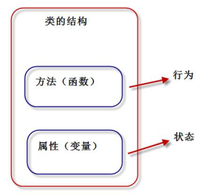
对象是类的具体实体，一般称为“类的实例”。类看做“饼干模具”，对象就是根据这个“模具”制造出的“饼干”。
从一个类创建对象时，每个对象会共享这个类的行为（类中定义的方法），但会有自己的属性值（不共享状态）。更具体一点：“方法代码是共享的，属性数据不共享”。
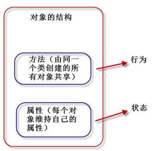
Python 中，“一切皆对象”。类也称为“类对象”，类的实例也称为“实例对象”。
定义类的语法格式如下：
class 类名：
类体
- 类名必须符合“标识符”的规则；一般规定，首字母大写，多个单词使用“驼峰原则”。
- 类体中我们可以定义属性和方法。
- 属性用来描述数据，方法(即函数)用来描述这些数据相关的操作。
【操作】一个典型的类的定义
class Student:
def __init__(self,name,score): #构造方法第一个参数必须为 self
self.name = name #实例属性
self.score = score
def say_score(self): #实例方法
print(self.name,'的分数是：',self.score)
s1 = Student('张三',80) #s1 是实例对象，自动调用__init__()方法
s1.say_score()
__init__构造方法和__new__方法¶
类是抽象的，也称之为“对象的模板”。我们需要通过类这个模板，创建类的实例对象，然后才能使用类定义的功能。
我们前面说过一个 Python 对象包含三个部分：id（identity 识别码）、type（对象类型）、value（对象的值）。
现在，我们可以更进一步的说，一个 Python 对象包含如下部分：
- id（identity 识别码）
- type（对象类型）
- value（对象的值）
- 属性（attribute）
- 方法（method）
创建对象，我们需要定义构造函数__init__()方法。构造方法用于执行“实例对象的初始化工作”，即对象创建后，初始化当前对象的相关属性，无返回值。
init()的要点如下：
- 名称固定，必须为：init()
- 第一个参数固定，必须为：self。 self 指的就是刚刚创建好的实例对象。
- 构造函数通常用来初始化实例对象的实例属性，如下代码就是初始化实例属性：name 和 score。
def __init__(self,name,score): self.name = name #实例属性 self.score = score - 通过“类名(参数列表)”来调用构造函数。调用后，将创建好的对象返回给相应的变量。
比如：s1 = Student('张三', 80) - __init__()方法：初始化创建好的对象，初始化指的是：“给实例属性赋值”。
- __new__()方法: 用于创建对象，但我们一般无需重定义该方法。
- 如果我们不定义__init__方法，系统会提供一个默认的__init__方法。如果我们定义了带参的__init__方法，系统不创建默认的__init__方法。
Tip
Python 中的 self 相当于 C++ 中的 self 指针，JAVA 和 C# 中的 this 关键字。Python 中，self 必须为构造函数的第一个参数，名字可以任意修改。但一般遵守惯例，都叫做 self。
实例属性和实例方法¶
实例属性¶
实例属性是从属于实例对象的属性，也称为“实例变量”。他的使用有如下几个要点：
- 实例属性一般在__init__()方法中通过如下代码定义：
self.实例属性名 = 初始值 - 在本类的其他实例方法中，也是通过 self 进行访问：
self.实例属性名 - 创建实例对象后，通过实例对象访问：
obj01 = 类名() #创建对象，调用__init__()初始化属性
obj01.实例属性名 = 值 #可以给已有属性赋值，也可以新加属性
实例方法¶
实例方法是从属于实例对象的方法。实例方法的定义格式如下：
def 方法名(self [, 形参列表])：
函数体
方法的调用格式如下：
对象.方法名([实参列表])
- 定义实例方法时，第一个参数必须为 self。和前面一样，self 指当前的实例对象。
- 调用实例方法时，不需要也不能给 self 传参。self 由解释器自动传参。
函数和方法的区别
- 都是用来完成一个功能的语句块，本质一样。
- 方法调用时，通过对象来调用。方法从属于特定实例对象，普通函数没有这个特点。
- 直观上看，方法定义时需要传递 self，函数不需要。
实例对象的方法调用本质：
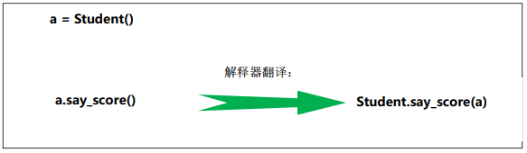
其他操作：
- dir(obj)可以获得对象的所有属性、方法
- obj.__dict__对象的属性字典
- pass 空语句
- isinstance（对象,类型） 判断“对象”是不是“指定类型”
类对象、类属性、类方法、静态方法¶
类对象¶
我们在前面讲的类定义格式中，“class 类名：”。实际上，当解释器执行 class 语句时，就会创建一个类对象。
【操作】测试类对象的生成
class Student:
pass #空语句
print(type(Student))
print(id(Student))
Stu2 = Student
s1 = Stu2()
print(s1)
<class 'type'>
51686328
<__main__.Student object at 0x0000000002B5FDD8>
我们可以看到实际上生成了一个变量名就是类名“Student”的对象。我们通过赋值给新变量 Stu2，也能实现相关的调用。说明，确实创建了“类对象”。
Tip
pass 为空语句。就是表示什么都不做，只是作为一个占位符存在。当你写代码时，遇到暂时不知道往方法或者类中加入什么时，可以先用 pass 占位，后期再补上。
类属性¶
类属性是从属于“类对象”的属性，也称为“类变量”。由于，类属性从属于类对象，可以被所有实例对象共享。
类属性的定义方式：
class 类名：
类变量名= 初始值
【操作】 类属性的使用测试
class Student:
company = "SXT" #类属性
count = 0 #类属性
def __init__(self,name,score):
self.name = name #实例属性
self.score = score
Student.count = Student.count+1
def say_score(self): #实例方法
print("我的公司是：",Student.company)
print(self.name,'的分数是：',self.score)
s1 = Student('张三',80) #s1 是实例对象，自动调用__init__()方法
s1.say_score()
print('一共创建{0}个 Student 对象'.format(Student.count))
我的公司是： SXT
张三 的分数是： 80
一共创建 1 个 Student 对象
类方法¶
类方法是从属于“类对象”的方法。类方法通过装饰器 @classmethod 来定义，格式如下：
@classmethod
def 类方法名(cls [，形参列表]) ：
函数体
- @classmethod 必须位于方法上面一行
- 第一个 cls 必须有；cls 指的就是“类对象”本身；
- 调用类方法格式：“类名.类方法名(参数列表)”。 参数列表中，不需要也不能给 cls 传值。
- 类方法中访问实例属性和实例方法会导致错误。
- 子类继承父类方法时，传入 cls 是子类对象，而非父类对象
【操作】类方法使用测试
class Student:
company = "SXT" #类属性
@classmethod
def printCompany(cls):
print(cls.company)
Student.printCompany()
静态方法¶
Python 中允许定义与“类对象”无关的方法，称为“静态方法”。
“静态方法”和在模块中定义普通函数没有区别，只不过“静态方法”放到了“类的名字空间里面”，需要通过“类调用”。
静态方法通过装饰器@staticmethod 来定义，格式如下：
@staticmethod
def 静态方法名([形参列表]) ：
函数体
- @staticmethod 必须位于方法上面一行。
- 调用静态方法格式：“类名.静态方法名(参数列表)”。
- 静态方法中访问实例属性和实例方法会导致错误。
【操作】静态方法使用测试
class Student:
company = "SXT" # 类属性
@staticmethod
def add(a, b): # 静态方法
print("{0}+{1}={2}".format(a,b,(a+b)))
return a+b
Student.add(20,30)
内存分析实例对象和类对象创建过程¶
我们以下面代码为例，分析整个创建过程，让大家对面向对象概念掌握更加深刻：
class Student:
company = "尚学堂" #类属性
count = 0 #类属性
def __init__(self,name,score):
self.name = name #实例属性
self.score = score
Student.count = Student.count+1
def say_score(self): #实例方法
print("我的公司是：",Student.company)
print(self.name,'的分数是：',self.score)
s1 = Student('高淇',80) #s1 是实例对象，自动调用__init__()方法
s1.say_score()
print('一共创建{0}个 Student 对象'.format(Student.count))
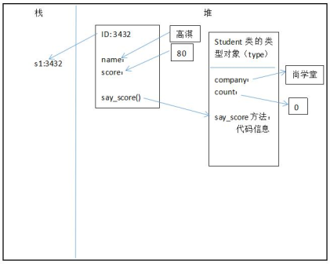
__del__方法(析构函数)和垃圾回收机制¶
__del__方法称为“析构方法”，用于实现对象被销毁时所需的操作。比如：释放对象占用的资源，例如：打开的文件资源、网络连接等。
Python 实现自动的垃圾回收，当对象没有被引用时（引用计数为 0），由垃圾回收器调用__del__方法。
我们也可以通过 del 语句删除对象，从而保证调用__del__方法。
系统会自动提供__del__方法，一般不需要自定义析构方法。
#析构函数
class Person:
def __del__(self):
print("销毁对象：{0}".format(self))
p1 = Person()
p2 = Person()
del p2
print("程序结束")
销毁对象：<__main__.Person object at 0x02175610>
程序结束
销毁对象：<__main__.Person object at 0x021755D0>
__call__方法和可调用对象¶
定义了__call__方法的对象，称为“可调用对象”，即该对象可以像函数一样被调用。
#测试__call__，可调用对象
class SalaryAccount:
'''工资计算类'''
def __call__(self, salary):
yearSalary = salary*12
daySalary = salary//30
hourSalary = daySalary//8
return dict(monthSalary=salary,yearSalary=yearSalary,daySalary=daySalary,hourSalary=hourSalary)
s = SalaryAccount()
print(s(5000)) #可以像调用函数一样调用对象的__call__方法
{'monthSalary': 5000, 'yearSalary': 60000, 'daySalary': 166, 'hourSalary': 20}
方法没有重载¶
在其他语言中，可以定义多个重名的方法，只要保证方法签名唯一即可。方法签名包含 3个部分：方法名、参数数量、参数类型。
Python 中，方法的的参数没有声明类型（调用时确定参数的类型），参数的数量也可以由可变参数控制。因此，Python 中是没有方法的重载的。定义一个方法即可有多种调用方式，相当于实现了其他语言中的方法的重载。
如果我们在类体中定义了多个重名的方法，只有最后一个方法有效。
建议：不要使用重名的方法！Python 中方法没有重载。
#Python 中没有方法的重载。定义多个同名方法，只有最后一个有效
class Person:
def say_hi(self):
print("hello")
def say_hi(self,name):
print("{0},hello".format(name))
p1 = Person()
#p1.say_hi() #不带参，报错：TypeError: say_hi() missing 1 required positional argument: 'name'
p1.say_hi("高淇")
方法的动态性¶
Python 是动态语言，我们可以动态的为类添加新的方法，或者动态的修改类的已有的方法。
#测试方法的动态性
class Person:
def work(self):
print("努力上班！")
def play_game(self):
print("{0}玩游戏".format(self))
def work2(s):
print("好好工作，努力上班！")
Person.play = play_game
Person.work = work2
p = Person()
p.play()
p.work()
私有属性和私有方法(实现封装)¶
Python 对于类的成员没有严格的访问控制限制，这与其他面向对象语言有区别。关于私有属性和私有方法，有如下要点：
- 通常我们约定，两个下划线开头的属性是私有的(private)。其他为公共的(public)。
- 类内部可以访问私有属性(方法)
- 类外部不能直接访问私有属性(方法)
- 类外部可以通过“_类名__私有属性(方法)名”访问私有属性(方法)
Tip
方法本质上也是属性！只不过是可以通过()执行而已。所以，此处讲的私有属性和公有属性，也同时讲解了私有方法和公有方法的用法。如下测试中，同时也包含了私有方法和公有方法的例子。
【测试】私有属性和公有属性使用测试
#测试私有属性、私有方法
class Employee:
__company = "百战程序员" #私有类属性. 通过 dir 可以查到_Employee__company
def __init__(self,name,age):
self.name = name
self.__age = age #私有实例属性
def say_company(self):
print("我的公司是：",Employee.__company) #类内部可以直接访问私有属性
print(self.name,"的年龄是：",self.__age)
self.__work()
def __work(self): #私有实例方法 通过 dir 可以查到_Employee__work
print("工作！好好工作，好好赚钱，娶个媳妇！")
p1 = Employee("高淇",32)
print(p1.name)
print(dir(p1)) #
p1.say_company()
print(p1._Employee__age) #通过这种方式可以直接访问到私有属性 。通过 dir 可以查到属性：_Employee__age
#print(p1.__age) #直接访问私有属性，报错
#p1.__sleep() #直接访问私有方法，报错
高淇
['_Person__age', '_Person__leg_num', '_Person__sleep', '__class__', '__delattr__',
'__dict__', '__dir__', '__doc__', '__eq__', '__format__', '__ge__', '__getattribute__', '__gt__',
'__hash__', '__init__', '__init_subclass__', '__le__', '__lt__', '__module__', '__ne__',
'__new__', '__reduce__', '__reduce_ex__', '__repr__', '__setattr__', '__sizeof__', '__str__',
'__subclasshook__', '__weakref__', 'name', 'say_age']
我的公司是： 百战程序员
高淇 的年龄是： 18
睡觉
18
@property 装饰器¶
@property 可以将一个方法的调用方式变成“属性调用”。下面是一个简单的示例，让大家体会一下这种转变：
#简单测试@property
class Employee:
@property
def salary(self):
return 30000;
emp1 = Employee()
print(emp1.salary) #打印 30000
print(type(emp1.salary)) #打印<class 'int'>
#emp1.salary() #报错：TypeError: 'int' object is not callable
#emp1.salary =1000 #@property 修饰的属性，如果没有加 setter 方法，则为只读属性。此处修改报错：AttributeError: can't set attribute
emp1.salary = 30000
如上的操作读操作、写操作。但是，这种做法不安全。比如，我需要限制薪水必须为 1-10000 的数字。这时候，我们就需要通过 getter、setter 方法来处理。
#测试@property
class Employee:
def __init__(self,name,salary):
self.name = name
self.__salary = salary
@property #相当于 salary 属性的 getter 方法
def salary(self):
print("月薪为{0},年薪为{1}".format(self.__salary,(12*self.__salary)))
return self.__salary;
@salary.setter
def salary(self,salary): #相当于 salary 属性的 setter 方法
if(0<salary<1000000):
self.__salary = salary
else:
print("薪水录入错误！只能在 0-1000000 之间")
emp1 = Employee("高淇",100)
print(emp1.salary)
emp1.salary = -200
月薪为 100,年薪为 1200
100
月薪为 100,年薪为 1200
100
薪水录入错误！只能在 0-1000000 之间
属性和方法命名总结¶
- _xxx：保护成员，不能用“from module import * ”导入，只有类对象和子类对象能访问这些成员。
- __xxx__：系统定义的特殊成员
- __xxx： 类中的私有成员，只有类对象自己能访问，子类对象也不能访问。（但，在类外部可以通过“对象名. _类名__xxx”这种特殊方式访问。Python 不存在严格意义的私有成员）
注：再次强调，方法和属性都遵循上面的规则。
类编码风格¶
- 类名首字母大写，多个单词之间采用驼峰原则。
- 实例名、模块名采用小写，多个单词之间采用下划线隔开。
- 每个类，应紧跟“文档字符串”，说明这个类的作用。
- 可以用空行组织代码，但不能滥用。在类中，使用一个空行隔开方法；模块中，使用两个空行隔开多个类。
面向对象三大特征介绍¶
Python 是面向对象的语言，也支持面向对象编程的三大特性：继承、封装（隐藏）、多态。
- 封装（隐藏）
隐藏对象的属性和实现细节，只对外提供必要的方法。相当于将“细节封装起来”，只对外暴露“相关调用方法”。
通过前面学习的“私有属性、私有方法”的方式，实现“封装”。Python 追求简洁的语法，没有严格的语法级别的“访问控制符”，更多的是依靠程序员自觉实现。 - 继承
继承可以让子类具有父类的特性，提高了代码的重用性。
从设计上是一种增量进化，原有父类设计不变的情况下，可以增加新的功能，或者改进已有的算法。 - 多态 多态是指同一个方法调用由于对象不同会产生不同的行为。生活中这样的例子比比皆是：同样是休息方法，人不同休息方法不同。张三休息是睡觉，李四休息是玩游戏，程序员休息是“敲几行代码”。
继承¶
继承是面向对象程序设计的重要特征，也是实现“代码复用”的重要手段。
如果一个新类继承自一个设计好的类，就直接具备了已有类的特征，就大大降低了工作难度。已有的类，我们称为“父类或者基类”，新的类，我们称为“子类或者派生类”。
语法格式¶
Python 支持多重继承，一个子类可以继承多个父类。继承的语法格式如下：
class 子类类名(父类 1[，父类 2，...])：
类体
定义子类时，必须在其构造函数中调用父类的构造函数。调用格式如下：
父类名.__init__(self, 参数列表)
class Person:
def __init__(self,name,age):
self.name = name
self.__age = age
def say_age(self):
print(self.name,"的年龄是：",self.__age)
class Student(Person):
def __init__(self,name,age,score):
self.score = score
Person.__init__(self,name,age) #构造函数中包含调用父类构造函数。根据需要，不是必须。 子类并不会自动调用父类的__init__()，我们必须显式的调用它。
s1 = Student("张三",15,85)
s1.say_age()
print(dir(s1))
张三 的年龄是： 15
['_Person__age', '__class__', '__delattr__', '__dict__', '__dir__', '__doc__', '__eq__',
'__format__', '__ge__', '__getattribute__', '__gt__', '__hash__', '__init__',
'__init_subclass__', '__le__', '__lt__', '__module__', '__ne__', '__new__', '__reduce__',
'__reduce_ex__', '__repr__', '__setattr__', '__sizeof__', '__str__', '__subclasshook__',
'__weakref__', 'name', 'say_age', 'score']
类成员的继承和重写¶
- 成员继承：子类继承了父类除构造方法之外的所有成员。
- 方法重写：子类可以重新定义父类中的方法，这样就会覆盖父类的方法，也称为“重写”
【操作】继承和重写的案例
class Person:
def __init__(self,name,age):
self.name = name
self.age = age
def say_age(self):
print(self.name,"的年龄是：",self.age)
def say_name(self):
print("我是",self.name)
class Student(Person):
def __init__(self,name,age,score):
self.score = score
Person.__init__(self,name,age) #构造函数中包含调用父类构造函数
def say_score(self):
print(self.name,"的分数是：",self.score)
def say_name(self): #重写父类的方法
print("报告老师，我是",self.name)
s1 = Student("张三",15,85)
s1.say_score()
s1.say_name()
s1.say_age()
张三 的分数是： 85
报告老师，我是 张三
张三 的年龄是： 15
查看类的继承层次结构¶
通过类的方法 mro()或者类的属性__mro__可以输出这个类的继承层次结构。
【操作】 查看类的继承层次结构
class A:pass
class B(A):pass
class C(B):pass
print(C.mro())
[<class '__main__.C'>, <class '__main__.B'>, <class '__main__.A'>, <class 'object'>]
object 根类¶
object 类是所有类的父类，因此所有的类都有 object 类的属性和方法。
dir()查看对象属性¶
为了深入学习对象，我们先学习内置函数 dir()，他可以让我们方便的看到指定对象所有的属性。
【测试】查看对象所有属性以及和 object 进行比对
class Person:
def __init__(self,name,age):
self.name = name
self.age = age
def say_age(self):
print(self.name,"的年龄是：",self.age)
obj = object()
print(dir(obj))
s2 = Person("高淇",18)
print(dir(s2))
['__class__', '__delattr__', '__dir__', '__doc__', '__eq__', '__format__', '__ge__',
'__getattribute__', '__gt__', '__hash__', '__init__', '__init_subclass__', '__le__', '__lt__',
'__ne__', '__new__', '__reduce__', '__reduce_ex__', '__repr__', '__setattr__', '__sizeof__',
'__str__', '__subclasshook__']
['__class__', '__delattr__', '__dict__', '__dir__', '__doc__', '__eq__', '__format__', '__ge__',
'__getattribute__', '__gt__', '__hash__', '__init__', '__init_subclass__', '__le__', '__lt__',
'__module__', '__ne__', '__new__', '__reduce__', '__reduce_ex__', '__repr__', '__setattr__',
'__sizeof__', '__str__', '__subclasshook__', '__weakref__', 'age', 'name', 'say_age']
- Person 对象增加了六个属性：
__dict__ __module__ __weakref__ age name say_age - object 的所有属性，Person 类作为 object 的子类，显然包含了所有的属性。
- 我们打印 age、name、say_age，发现 say_age 虽然是方法，实际上也是属性。只不过，这个属性的类型是“method”而已。
age <class 'int'> name <class 'str'> say_age <class 'method'>
重写__str__()方法¶
object 有一个__str__()方法，用于返回一个对于“对象的描述”，对应于内置函数 str() 经常用于 print()方法，帮助我们查看对象的信息。__str__()可以重写。
class Person:
def __init__(self,name,age):
self.name = name
self.__age = age
def __str__(self):
'''将对象转化成一个字符串，一般用于 print 方法'''
return "名字是：{0},年龄是{1}".format(self.name,self.__age)
p = Person("高淇",18)
print(p)
名字是：高淇,年龄是 18
多重继承¶
Python 支持多重继承，一个子类可以有多个“直接父类”。这样，就具备了“多个父类”的特点。但是由于，这样会被“类的整体层次”搞的异常复杂，尽量避免使用。
#多重继承
class A:
def aa(self):
print("aa")
class B:
def bb(self):
print("bb")
class C(B,A):
def cc(self):
print("cc")
c = C()
c.cc()
c.bb()
c.aa()
cc
bb
aa
MRO()¶
Python 支持多继承，如果父类中有相同名字的方法，在子类没有指定父类名时，解释器将“从左向右”按顺序搜索。
MRO（Method Resolution Order）：方法解析顺序。 我们可以通过 mro()方法获得“类的层次结构”，方法解析顺序也是按照这个“类的层次结构”寻找的。
#多重继承
class A:
def aa(self):
print("aa")
def say(self):
print("say AAA!")
class B:
def bb(self):
print("bb")
def say(self):
print("say BBB!")
class C(B,A):
def cc(self):
print("cc")
c = C()
print(C.mro()) #打印类的层次结构
c.say() #解释器寻找方法是“从左到右”的方式寻找，此时会执行 B 类中的 say()
super()获得父类定义¶
在子类中，如果想要获得父类的方法时，我们可以通过 super()来做。
super()代表父类的定义，不是父类对象。
#super()
class A:
def say(self):
print("A: ",self)
print("say AAA")
class B(A):
def say(self):
#A.say(self) 调用父类的 say 方法
super().say() #通过 super()调用父类的方法
print("say BBB")
b = B()
b.say()
A: <__main__.B object at 0x007A5690>
say AAA
say BBB
多态¶
多态（polymorphism）是指同一个方法调用由于对象不同可能会产生不同的行为。在现实生活中，我们有很多例子。比如：同样是调用人的休息方法，张三的休息是睡觉，李四的休息是玩游戏，高淇老师是敲代码。同样是吃饭的方法，中国人用筷子吃饭，英国人用刀叉吃饭，印度人用手吃饭。
关于多态要注意以下 2 点：
- 多态是方法的多态，属性没有多态。
- 多态的存在有 2 个必要条件：继承、方法重写。
运行结果：
#多态 class Animal: def shout(self): print("动物叫了一声") class Dog(Animal): def shout(self): print("小狗，汪汪汪") class Cat(Animal): def shout(self): print("小猫，喵喵喵") def animalShout(a): if isinstance(a,Animal): a.shout() #传入的对象不同，shout 方法对应的实际行为也不同。 animalShout(Dog()) animalShout(Cat())小狗，汪汪汪 小猫，喵喵喵
特殊方法和运算符重载¶
Python 的运算符实际上是通过调用对象的特殊方法实现的。比如：
a = 20
b = 30
c = a+b
d = a.__add__(b)
print("c=",c)
print("d=",d)
c= 50
d= 50
| 方法 | 说明 | 例子 |
|---|---|---|
| __init__ | 构造方法 | 对象创建：p = Person() |
| __del__ | 析构方法 | 对象回收 |
| __repr__,__str__ | 打印，转换 print(a) | |
| __call__ | 函数调用 | a() |
| __getattr__ | 点号运算 | a.xxx |
| __setattr__ | 属性赋值 | a.xxx = value |
| __getitem__ | 索引运算 | a[key] |
| __setitem__ | 索引赋值 | a[key]=value |
| __len__ | 长度 | len(a) |
每个运算符实际上都对应了相应的方法，统计如下：
| 运算符 | 特殊方法 | 说明 |
|---|---|---|
| 运算符+ | __add__ | 加法 |
| 运算符- | __sub__ | 减法 |
| <,<=,== | __lt__,__le__，__eq__ | 比较运算符 |
| >,>=,!= | __gt__,__ge__,__ne__ | |
| <<,>> | __lshift__,__rshift__ | 左移、右移 |
| *,/,%,// | __mul__,__truediv__,__mod__,__floordiv__ | 乘、浮点除、模运算（取余）、整数除 |
| ** | __pow__ | 指数运算 |
我们可以重写上面的特殊方法，即实现了“运算符的重载”。
#测试运算符的重载
class Person:
def __init__(self,name):
self.name = name
def __add__(self, other):
if isinstance(other,Person):
return "{0}--{1}".format(self.name,other.name)
else:
return "不是同类对象， 不能相加"
def __mul__(self, other):
if isinstance(other,int):
return self.name*other
else:
return "不是同类对象， 不能相乘"
p1 = Person("高淇")
p2 = Person("高希希")
x = p1 + p2
print(x)
print(p1*3)
高淇--高希希
高淇高淇高淇
特殊属性¶
Python 对象中包含了很多双下划线开始和结束的属性，这些是特殊属性，有特殊用法。这里我们列出常见的特殊属性：
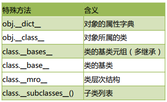
#测试特殊属性
class A:
pass
class B:
pass
class C(B,A):
def __init__(self,nn):
self.nn = nn
def cc(self):
print("cc")
c = C(3)
print(dir(c))
print(c.__dict__)
print(c.__class__)
print(C.__bases__)
print(C.mro())
print(A.__subclasses__())
['__class__', '__delattr__', '__dict__', '__dir__', '__doc__', '__eq__', '__format__', '__ge__',
'__getattribute__', '__gt__', '__hash__', '__init__', '__init_subclass__', '__le__', '__lt__',
'__module__', '__ne__', '__new__', '__reduce__', '__reduce_ex__', '__repr__', '__setattr__',
'__sizeof__', '__str__', '__subclasshook__', '__weakref__', 'cc', 'nn']
{'nn': 3}
<class '__main__.C'>
(<class '__main__.B'>, <class '__main__.A'>)
[<class '__main__.C'>, <class '__main__.B'>, <class '__main__.A'>, <class 'object'>]
[<class '__main__.C'>]
对象的浅拷贝和深拷贝¶
-
变量的赋值操作
只是形成两个变量，实际还是指向同一个对象。 -
浅拷贝
Python 拷贝一般都是浅拷贝。拷贝时，对象包含的子对象内容不拷贝。因此，源对象和拷贝对象会引用同一个子对象。 -
深拷贝
使用 copy 模块的 deepcopy 函数，递归拷贝对象中包含的子对象。源对象和拷贝对象所有的子对象也不同。
#测试对象的引用赋值、浅拷贝、深拷贝
import copy
class MobilePhone:
def __init__(self,cpu,screen):
self.cpu = cpu
self.screen = screen
class CPU:
def calculate(self):
print("计算，算个 12345")
print("CPU 对象:",self)
class Screen:
def show(self):
print("显示一个好看的画面，亮瞎你的钛合金大眼")
print("屏幕对象：",self)
c = CPU()
s = Screen()
m = MobilePhone(c,s)
m.cpu.calculate()
n = m #两个变量，但是指向了同一个对象
print(m,n)
m2 = copy.copy(m) #m2 是新拷贝的另一个手机对象
print(m,m2)
m.cpu.calculate()
m2.cpu.calculate() #m2 和 m 拥有了一样的 cpu 对象和 screen 对象
m3 = copy.deepcopy(m)
m3.cpu.calculate() #m3 和 m 拥有不一样的 cpu 对象和 screen 对象
计算，算个 12345
CPU 对象: <__main__.CPU object at 0x00685690>
<__main__.MobilePhone object at 0x00685B50> <__main__.MobilePhone object at 0x00685B50>
<__main__.MobilePhone object at 0x00685B50> <__main__.MobilePhone object at 0x0069B490>
计算，算个 12345
CPU 对象: <__main__.CPU object at 0x00685690>
计算，算个 12345
CPU 对象: <__main__.CPU object at 0x00685690>
计算，算个 12345
CPU 对象: <__main__.CPU object at 0x006A5DB0>
组合¶
“is-a”关系，我们可以使用“继承”。从而实现子类拥有的父类的方法和属性。“is-a”关系指的是类似这样的关系：狗是动物，dog is animal。狗类就应该继承动物类。
“has-a”关系，我们可以使用“组合”，也能实现一个类拥有另一个类的方法和属性。”has-a”关系指的是这样的关系：手机拥有 CPU。 MobilePhone has a CPU。
#组合测试
class MobilePhone:
def __init__(self,cpu,screen):
self.cpu = cpu
self.screen = screen
class CPU:
def calculate(self):
print("计算，算个 12345")
class Screen:
def show(self):
print("显示一个好看的画面，亮瞎你的钛合金大眼")
c = CPU()
s = Screen()
m = MobilePhone(c,s)
m.cpu.calculate() #通过组合，我们也能调用 cpu 对象的方法。相当于手机对象间接拥有了“cpu 的方法”
m.screen.show()
计算，算个 12345
显示一个好看的画面，亮瞎你的钛合金大眼
设计模式_工厂模式¶
设计模式是面向对象语言特有的内容，是我们在面临某一类问题时候固定的做法，设计模式有很多种，比较流行的是：GOF（Goup Of Four）23 种设计模式。当然，我们没有必要全部学习，学习几个常用的即可。
对于初学者，我们学习两个最常用的模式：工厂模式和单例模式。
工厂模式实现了创建者和调用者的分离，使用专门的工厂类将选择实现类、创建对象进行统一的管理和控制。
#工厂模式
class CarFactory:
def createCar(self,brand):
if brand == "奔驰":
return Benz()
elif brand == "宝马":
return BMW()
elif brand == '比亚迪':
return BYD()
else:
return "未知品牌，无法创建"
class Benz:
pass
class BMW:
pass
class BYD:
pass
factory = CarFactory()
c1 = factory.createCar("奔驰")
c2 = factory.createCar("宝马")
print(c1)
print(c2)
<__main__.Benz object at 0x021C5770>
<__main__.BMW object at 0x021C5790>
设计模式_单例模式¶
单例模式（Singleton Pattern）的核心作用是确保一个类只有一个实例，并且提供一个访问该实例的全局访问点。
单例模式只生成一个实例对象，减少了对系统资源的开销。当一个对象的产生需要比较多的资源，如读取配置文件、产生其他依赖对象时，可以产生一个“单例对象”，然后永久驻留内存中，从而极大的降低开销。
单例模式有多种实现的方式，我们这里推荐重写__new__()的方法。
#单例模式
class MySingleton:
__obj = None
__init_flag = True
def __new__(cls, *args, **kwargs):
if cls.__obj == None:
cls.__obj = object.__new__(cls)
return cls.__obj
def __init__(self,name):
if MySingleton.__init_flag:
print("init....")
self.name = name
MySingleton.__init_flag = False
a = MySingleton("aa")
print(a)
b = MySingleton("bb")
print(b)
init....
<__main__.MySingleton object at 0x01E15610>
<__main__.MySingleton object at 0x01E15610>
设计模式称之为“模式”，就是一些固定的套路。我们很容易用到其他场景上，比如前面讲的工厂模式，我们需要将工厂类定义成“单例”，只需要简单的套用即可实现：
#测试工厂模式和单例模式的整合使用
class CarFactory:
__obj = None #类属性
__init_flag = True
def create_car(self,brand):
if brand =="奔驰":
return Benz()
elif brand =="宝马":
return BMW()
elif brand == "比亚迪":
return BYD()
else:
return "未知品牌，无法创建"
def __new__(cls, *args, **kwargs):
if cls.__obj ==None:
cls.__obj = object.__new__(cls)
return cls.__obj
def __init__(self):
if CarFactory.__init_flag:
print("init CarFactory....")
CarFactory.__init_flag = False
class Benz:
pass
class BMW:
pass
class BYD:
pass
factory = CarFactory()
c1 = factory.create_car("奔驰")
c2 = factory.create_car("比亚迪")
print(c1)
print(c2)
factory2 = CarFactory()
print(factory)
print(factory2)
init CarFactory....
<__main__.Benz object at 0x01E36E90>
<__main__.BYD object at 0x01E36C30>
<__main__.CarFactory object at 0x01E36730>
<__main__.CarFactory object at 0x01E36730>